Urban Atlas Building Block Height Model 2012 - Product User Manual (PUM)
Copernicus Land Monitoring Service
Building Block Height Model, Functional Urban Areas, Digital Surface Model, Digital Terrain Model, False stereo pair images, Area of Interest refinement, Building footprint extraction, Urban heat island effect, Urban density measurement, Remote sensing photogrammetry
Contact:
European Environment Agency (EEA)
Kongens Nytorv 6
1050 Copenhagen K
Denmark
https://land.copernicus.eu/
1 Executive summary
Copernicus is the European Union’s Earth Observation (EO) Programme. It offers information services based on satellite earth observation and in situ (non-space) data and is an integrated part of EEA’s strategy to improve environmental information. These information services are freely and openly accessible to its users through six thematic Copernicus services (atmosphere monitoring, marine environment monitoring, land monitoring, climate change, emergency management and security).
The Copernicus Land Monitoring Service (CLMS) provides geographical information on land cover and its changes, land use, vegetation state, water cycle and earth surface energy variables to a broad range of users in Europe and across the world in the field of environmental terrestrial applications. CLMS information is based on space data combined with other sources. It addresses a wide range of policies such as environment, agriculture, regional development, transport and energy at EU level, and European commitments to International Conventions.
CLMS is jointly implemented by the European Environment Agency (EEA) and the European Commission DG Joint Research Centre (JRC).
The local component is coordinated by the EEA as part of CLMS and aims to provide specific and more detailed information that is complementary to the information obtained through the pan-European component. The local component focuses on different “hotspots”, i.e., areas that are prone to specific environmental challenges and problems. It is based on very high-resolution (VHR) imagery in combination with other available datasets (high and medium resolution images) over the pan-European area.
The Urban Atlas (UA) suite of products of CLMS was the first in a series of land monitoring services on so called hotspots addressing urban areas. It was the first service to create harmonised Land Cover and Land Use (LC/LU) maps over several hundred cities and their surroundings, i.e., within Functional Urban Areas (FUA) together with an additional layer mapping street trees. The Urban Atlas goes hand in hand with the Urban Audit, in which the European Commission’s Directorate-General Eurostat collects a wide range of social and economic indicators. The Urban Atlas adds a spatial component to the statistical data, which enables comparison of urban spatial patterns across Europe.
The Building Block Height Model (BBHM) is an additional information layer available in the UA suite of products and will be referred to UA BBHM from now onwards. Building heights within cities are important hot spots as the information can be used to make simple 3D-visualisations of buildings and structures and can be used to assist a range of analytical applications.
One of the main purposes of the UA BBHM product is to provide VHR information (building block footprinst displayed as a regular grid) containing building height in selected European cities in the EEA38 area, to obtain a better insight into measuring urban density.
The first release of the UA BBHM dataset covered 31 capital cities. The second release added 7 new capital cities (from Turkey and the West Balkans) and included 6 cities already produced and published that were extended in area. This added up to a total of 38 capital cities derived from IRS-P5 stereo images of the reference year 2012.
For this new release, the UA BBHM product has been produced for 845 cities and urban centres across EEA38 which defines the project’s working area. Within the 845 cities there are 13 capital cities that were remapped due to, again, extension in area. The selection of cities to map has been based on the definition of a city and urban centre (also known as High Density Clusters), see chapter 6.1 for details. To the 845 selected cities and remapped capital areas the remaining 25 capitals cities that were not remapped were added. The UA BBHM thus covers a total of 870 cities and urban centres.
The building height information of the new relelase is derived from VHR false pair stereo images of, or close to, the reference year 2012, and contains only the height of the building block itself (i.e. vegetation, water and roads are masked out).
The product covers approximately 75 000 km2 with a MMU of 10 x 10 m.
2 Guide for the reader
2.1 Who is this guide for?
This Product User Manual is the primary document that users are recommended to read before using the UA BBHM product. It provides an overview of the product characteristics, product methodology and workflows, user requirements and example/potential use cases, information about the Quality Assessment (QA) checks and their results as well as product technical support.
2.2 Content and structure
The document is structured as follows:
Chapter 1 introduces the executive summary.
Chapter 2 presents the reader’s guide.
Chapter 3 recalls the user requirements.
Chapter 4 presents potential product application areas and/or use cases examples.
Chapter 5 presents the product description (product content and features, file naming convention and format(s)).
Chapter 6 provides a description of the product methodology and workflows and highlights the important issues to users.
Chapter 7 summarizes the quality assessment and/or validation procedure and results
Chapter 8 provides information on the terms of access and use of the product, as well as on the technical support for the product.
Chapter 9 provides information on references to the cited literature
Annexes
3 Review of user requirements
The European Commission has been systematically collecting user needs for Copernicus products and services, expressed in different policy areas. Information on specific aspects of land cover (i.e., building blocks) such as provided by this UA BBHM product are an essential prerequisite to support many policies, reporting and monitoring obligations (European Commission, 2019).
Building height is a characteristic that can enhance disaggregation processes of population and employment data in urban areas. Height or volume information will reduce the error margin of the disaggregation results.
3-D information for disaggregation purposes was the major user requirement that led to the production of the UA BBHM dataset.
4 Product application areas and/or examples of use cases
The UA BBHM can help inform urban planning efforts in terms of, for example, monitoring urban climate and potential areas at risk for urban heat island effects, which affect human wellbeing. The distribution of population in an urban area may also facilitate the understanding of the risk of spreading infectious diseases (David Frantz, 2021), the energy use and in effect CO2-emissions of different parts of the city (transport hotspots, heating/cooling), pollution dispersion and air quality, as well as guide rapid decision making in emergency response and disaster risk mitigation.
4.1 Use case: Building height and sustainability (energy use and CO2-emissions)
Studies show that the most efficient way to impact urban form and increase the built-up density, is by increasing the building height (Eirik Resch, 2016) (Yu, et al., 2022). The urban form and built-up density can be used as an indicator of building energy use. Increased density in urban areas can result in signifcant energy savings due to less energy demand for heating and cooling (Burak Güneralp, 2017). Building more compact cities has also been identified by the IPCC as an important mitigation measure for climate change, as it is related to reduced energy use per capita, primarily because of a decrease in energy used for transportation when inhabitants are able to walk or cycle to a larger extent, but also due to reduced energy use for heating and/or cooling (Burak Güneralp, 2017) (Eirik Resch, 2016) (Jiayu Li, 2022).
There is a relation between built-up density, building height and building energy use, and subsequently CO2-emissions due to for example heating, cooling, ventilation, and artificial lighting. Taller buildings with compact urban form suffer less heat loss than lower buildings in colder climates and high-rise buildings in warmer climates decrease the solar exposure on surrounding buildings, in suitably dense built-up areas, which may reduce the cost of cooling. (Eirik Resch, 2016) (Burak Güneralp, 2017)
4.2 Use case: Informing sustainable and climate resilient cities
Built-up area and population density can be used for creating indicators to measure progress towards different international framework agreements and governance processes, aiming to build more resilient and sustainable societies (D. Ehrlich, 2018). These indicators could for example be measuring urbanisation, land consumption, and percentage of population residing in urban areas. Population change over time could be used to model migration trends. Data on built-up area and population density can also give an indication of sustainability in the form of estimated amount of waste created and environmental ability to manage it, as well as the access to and availability of resources at the local level. (D. Ehrlich, 2018)
To facilitate an understanding for how to build a resilient response to the impacts caused by climate change on communities, as well as how to reassess the exposure and resulting risk of people to hazards in a changing urban landscape, built-up area and population density can provide useful tools and input data. (D. Ehrlich, 2018)
4.3 Use case: Informing urban planning and risks to human wellbeing
Urbanisation and dense urban living could impact spreading of infectious diseases (Wu, 2017), building height could prove an indicator of this risk to human wellbeing, supporting plans and policies to mitigate such hazards.
The urban form influences the urban environment and socioeconomic activities which in turn have various effects on the urban environment in terms of for example changing land cover and urban functions and structures, which can impact for example human wellbeing. The urban form can also affect urban heat islands (UHI), greenhouse gas emissions, energy consumption, urban ecosystems, and public health. (Yu, et al., 2022) (Tian, 2019)
Building height information in cities influence metrics such as the arise of UHI, and pedestrian ventilation and pollution dispersion. Knowledge about the building height and 3D-model of cities could prove a powerful tool to inform urban planning efforts aiming to improve human wellbeing, as well as inform studies on population distribution and CO2-emissions. (Yu, et al., 2022)
Indoor environment can also be impacted by surrounding building height, causing acoustic and illumination effects that impact the health of building occupants, thus building height (and density) information can aid in neighborhood and building design to alleviate health problems caused by acoustic or visual discomfort. (Isabelle Y.S. Chan, 2018)
Building height has been shown to affect Land Surface Temperature (LST) and air temperature (Tair) and varying building heights can contribute to better ventilation and pollution dispersion in densely built areas in cities (Bálint Papp, 2021) (Zander S. Venter, 2020). Both are indicators of urban heat and can indicate the cooling requirements of urban infrastructure, and thus the energy-use and carbon emissions (Zander S. Venter, 2020), as presented in section 4.1.
LST is important for quantifying urban heat islands (UHI) (Zander S. Venter, 2020), and has been shown having a lower correlation (than building cover and vegetation cover and height) contributing to a higher LST in relatively low buildings (up to 9 m) and cooler climates (Alexander, 2021), but having a stronger correlation (than building density and vegetation coverage) and contributing to a lower LST in high rise buildings and warmer climates (Zhong Zheng, 2019).
Tair is largely influenced by urbanisation (Zander S. Venter, 2020) and LST (Alexander, 2021), and can be predicted with building height. Both LST and Tair can be used as an indicator for human heat exposure and UHI, but Tair may be the better indicator for this specific use and can additionally be used as a determinant of urban cooling, (Zander S. Venter, 2020). This information can be used to establish policy instruments and/or national plans to prepare for and adapt to extreme heat waves and the health risks and impact this may have on the urban population. The information on building height and the relation to Tair can also be used for climate change adaptation measures in cities, to quantify the value of eco-systems services and inform nature-based solutions.
Air temperature, Tair, is linearly connected with varying building height, and building height is one variable to predict Tair, and can significantly reduce city ventilation and thus can indirectly affect pollution dispersion (Zander S. Venter, 2020), (Bálint Papp, 2021). High-rise buildings tend to decrease natural ventilation (Burak Güneralp, 2017). Building height can also be used as an indicator of populations density and quantification of emissions (D. Ehrlich, 2018). The temperature of block surfaces, affected by building heights and density mainly when these factors combined contribute to a decreased solar radiation reaching the block surface, also affect the temperature experienced by pedestrians, wind patterns and heat loss (Yunhao Chen, 2020).
These indicators and information indicate the importance of open-source building height modelling for input into urban planning for human health and wellbeing and to facilitate nature-based solutions to climate change adaptation.
4.4 Use case: Modeling hazard impact and emergency response
Population density and built-up area can be used to model impacts from hazards, as population location is an important indicator of exposure and vulnerability in disaster risk analysis (Xu M, 2020). The measured impact of fast-onset hazards on the built environment is largely depending on the built-up area as the main indicator of impact is measured in casualties (D. Ehrlich, 2018). The more precise the measurement of disaster impact is, the better the estimations of aid and emergency services can be.
Emergency response to man-made, meterorological or geophysical hazards leading to unfolding disasters or humanitarian emergencies could also largely benefit from population density data. The information can aid in assessment of damage severity and number of people affected, for example with the Copernicus Emergency Management Service (Copernicus EMS) or similar services. Assessment of damage can also provide useful and updated information to resource allocation, specific and exposed assets or population groups such as transport networks and route design, utilities and industry as well as settlements. (D. Ehrlich, 2018) (Xu M, 2020)
4.5 Building height and building stock
Building height could prove an indicator of the building stock of a city, and thus an indicator of consumption of resources, and future source of supply of metallic and mineral resources (Kleemann, 2017).
Building stock is a variable associated to the energy performance of buildings and has led the EC to establish an observatory aiming to provide a better understanding of the energy performance of the building sector through reliable, consistent and comparable data.
Building height can provide key characteristics of the building stock in both large urban agglomerations and small-scale rural settlements as it enables previously impossible environmental, socioeconomic, and climatological studies (Thomas Esch, 2022).
This this is especially true for the fields of spatial planning, sustainable development, urban climate, urban economics, or disaster and risk management. More precise data on building density is also essential for an improved modeling and assessment of population distribution, air pollution and emissions, carbon footprint, energy demand, and traffic patterns (Thomas Esch, 2022).
5 Product description
5.1 Product overview
Each Urban Atlas product is generated over the city and its commuting zone, according to the EU-OECD definition of a Functional Urban Area (FUA). The EU-OECD have developed a methodology to define high-density clusters (also called urban centres), cities and FUAs in a consistent way across countries. Using population density and travel-to-work flows as key information, a FUA consists of a densely inhabited city and a surrounding area (commuting zone) whose labour market is highly integrated with the city (OECD 2012). For the detailed definition of urban centres, cities and FUAs please refer to “The EU-OECD definition of a functional urban area” (Dijkstra, 2019).
The UA BBHM product is a set of layers in GeoTIFF raster format containing building height information for 870 European cities and urban centres, located in Functional Urban Areas (FUAs) accross the EEA38 area, covering an approximate area of around 75 000 km2.
The UA BBHM is based on VHR imagery for the defined areas of intereste (AoI) from the reference year 2012, or as close as possible to this year, see chapter 6.2.1 for details. From these a Digital Surface Model (DSM), a Digital Terrain Model (DTM) and Digital Height Model (DHM) are created, with which the BBHM product can finally be derived.
The UA BBHM product has a MMU of 10 x 10 m and is projected to the European reference system EPSG:3035. All information that does not correspond to a building height value is classified as NoData, with a value in the data matrix of 65535.
5.2 Technical specification
The table below summarises the technical specification of the UA BBHM product.
|
|
|---|---|
|
|
|
|
|
|
|
|
|
|
|
|
|
|
|
|
The content of a downloaded package is explained below.
For each city or urban centre, the downloaded .zip-file contains four folders, see Figure 5‑1:
Dataset folder containingin the Digital Height Model in GeoTIFF format;
Metadata folder containing an INSPIRE Compliant XML-file;
Pixel Based Info folder containing the pixel based information shapefile containing the satellite / LiDAR footprints;
QC folder containing the Quality Control (QC) report in PDF format.
NAMING CONVENTION:
| COUNTRY CODE NUMERIC CITY IDENTIFIER | CITY NAME | PRODUCT NAME | LAYER
The nomenclature of each layer consists of four parts, written in capital letters and separated by an underline. The first part is an alphanumeric code referring to the country in which it is located, followed by a unique numeric identifier for each city, the second part is the name of the city, the third part is a suffix indicating the name of the product suite and the fourth and last part indicates the layer. An example of nomenclature for the GeoTIFF file layer is as follows: ES009_VALLADOLID_UA2012_DHM (see Table 5‑1 for more examples).
Figure 5‑1 shows how the product is structured, as well as additional nomenclature example.
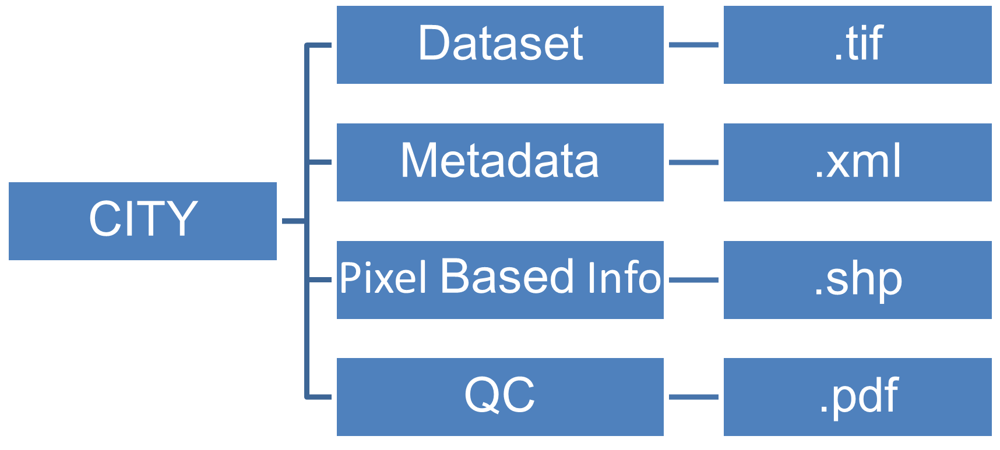
| Type | |
|---|---|
|
Zipfile |
|
FOLDER |
| Example: ES009_VALLADOLID_UA2012_DHM_v010.tif | File |
|
FOLDER |
| Example: ES009_VALLADOLID_UA2012_DHM_v010.xml | File |
|
FOLDER |
| Example: ES009_VALLADOLID_UA2012_DHM_v010.shp | File |
|
FOLDER |
| Example: ES009_VALLADOLID_UA2012_DHM_v010.pdf | File |
The following subchapters give a description of the content of each of the zipped folders.
5.2.1 Previous vs. current release folder naming
In previous releases of the Urban Atlas products, the delineations of the FUAs have been updated continuously from one release to another, as the population densities or commuting patterns of the city areas have changed. These updated FUAs have been labelled “L”+number to indicate which version of FUA delineation was used (e.g. L1, L2, etc.). In the previous release of the UA BBHM this labelling was kept, but for this new UA BBHM release it has been removed. Thus, for a user who has downloaded UA BBHM files for any of the capital cities from the previous release, the files are named as for the example of Vienna (WIEN) in Figure 5‑2. As can be seen from the example, this was the second FUA version of Vienna, indicated by the “L2”. For this new release the downloaded folder names will not have this LX, where X indicates a number, see Figure 5‑3.
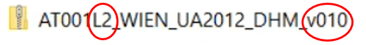
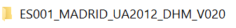
Regarding versioning there are a few aspects to take into consideration:
In the first release there were two versions: version “v010” (original version) and version “v020” if the city had been re-mapped due to some area extension, see Figure 5‑4. There were six cities with version “v020”. In this new release these cities will display version “v030”.
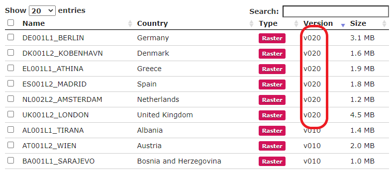
The remaining 25 capital cities that were a part of the previous release have not been updated for building height values but were subjected to a remapping of “0” values into “NoData”, to be aligned with this new release. In this case these cities will display version “v020”.
All newly added cities for this release will display version “v010”.
5.2.2 Dataset
In this folder, a raster file in GeoTIFF format is stored. This is a layer that shows the heights of the buildings, with a data type of 16-bit unsigned integer (UInt16) with LZW compression, since a negative height value on buildings is not expected. It presents a MMU of 10 x 10 meters, and it is projected to the European terrestrial reference system “ETRS89 Lambert Azimuthal Equal Area (LAEA)” with EPSG:3035. All information that does not correspond to a building height value is classified as NoData, with a value in the data matrix of 65535. These characteristics allow the GeoTIFF file to occupy a very small size (as compared to the first release that also included “0” values). It was decided to remove the zeros because we could not distinguish a “0” that was a measured value or a “0” that referred to vegetation, water or roads (masked out).
When the user opens the GeoTIFF file in a GIS software, it will be displayed using a default grayscale ramp, as the product does not have a default color ramp or style defined.
5.2.3 Metadata
A metadata file is created for each BBHM file, containing the information of the product. The information refers to data identification, classification of spatial data, geographic reference, temporal reference, quality and validity, conformity, constraints related to access and use and responsible organisation. These files were created according to the EEA metadata INSPIRE compliant requirements guideline.
5.2.4 Pixel Based Information
The Pixel Based information data includes an ESRI shapefile layer, together with its associated files, showing the information and spatial distribution of the VHR satellite, or LiDAR, image pairs used for the construction of the Digital Height Model (DHM).
Each file details the images conforming each false stereo pair. The information is subdivided into polygonal entities. When one of the polygonal entities is selected the accompanying attribute table can be shown, see example in Figure 5‑5. The attribute table shows the properties of the images that compose the image pair used to evaluate the building height in that specific area; like the image ID, the date of image acquisition, sensor used (vehicle, see Table 5‑2), percentage of cloud cover, the value of nadir angle, sun elevation, and value of azimuthal angle. These values are essential for the calculation of the DSM using optical satellite photogrammetry technology, see chapter 6.3.
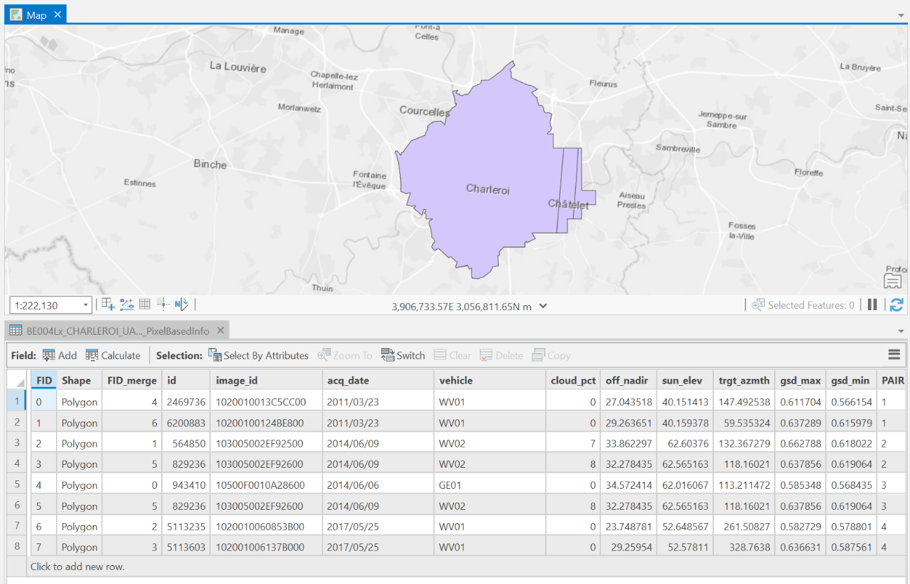
The previous example is true for any of the 845 new cities added or capital cities remapped in this release, i.e. the 25 capital cities which were not remapped from the previous release will not have a folder called Pixel Based Info in the downloaded .zip-file. These 25 capital cities from the previous release have been included without remapping, however they have undergone a reprocessing as described in chapter 6.6.
Table 5‑2 shows the name and description of the different sensors used.
| Sensor | Description | Resolution | Spectral Bands |
|---|---|---|---|
| WV-01 | Worldview 1 | 0.5 | PAN |
| WV-02 | Worldview 2 | 0.5 | PAN + RGB NIR |
| WV-03 | Worldview 3 | 0.5 | PAN + RGB NIR |
| GE-01 | GeoEye 01 | 0.5 | PAN + RGB NIR |
| QB-02 | Quickbird 02 | 0.65 | PAN + RGB NIR |
| IK | Ikonos | 0.5 | PAN + RGB NIR |
5.2.5 QC
The QC report is a report in PDF format with the results obtained after the execution of the quality control. This report is produced for each of the processed cities.
The first part of the report presents a summary table identifying the city and the name of the layer to which the report refers, the country to which it belongs, and the area assessed, as well as the organization that performs the functions of data provider and quality control, followed by a rating of the quality level, see Figure 5‑6.
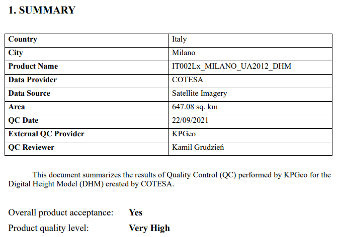
This is followed by format consistency table, see Figure 5‑7, in which the conformity of the GeoTIFF file with the properties and technical characteristics relevant to data type, coordinate system, MMU etc., are evaluated.
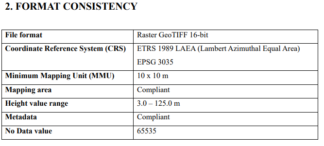
Finally, the methodology followed during the QC process is described, accompanied by an accuracy assessment table with the results obtained for each control point. The control points are distributed throughout the AoI and associated QC blocks, see Figure 5‑8, and represented on an overview map.
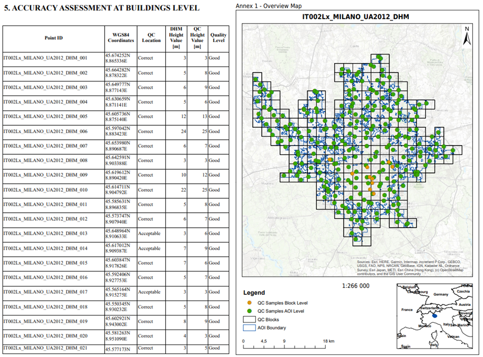
The quality control reports contain the following information:
File naming
Minimum Mapping Unit value
Reference system
Raster data type
Raster NoData value
Building heights range
DHM coverage correctness
Building heights correctness
5.2.6 Symbology
Symbology files in two formats, xml and lyr are also available for download.
6 Product methodology and workflow
This chapter is a description of the methodological development of the UA BBHM, a brief introduction is given below.
The spatial coverage of the UA BBHM product is defined by the Area of Interest (AoI), which comprises 75.000 km2.
The proposed dataset with building height information covering European cities and urban centres is based on satellite images from sensors WV-01, WV-02, WV-03, GE-01 and IK-02, constructing false stereo pairs of images acquired as close as possible to the defined reference year, 2012. Based on these false stereo pair images, a digital surface model (DSM) was generated. Afterwards a digital terrain model (DTM) was derived from the DSM with different filter algorithms and the assistance of Urban Atlas 2012 datasets. The calculation of the normalized DSM was done by a simple subtraction of the DTM from the DSM. The final product was then clipped based on the AoI and quality controlled.
Thefollowing steps were undertaken, detailed in Figure 6‑1.
Region Studies:
Defining and refining of the AoI by country, city and areas with buildings
Selection of the appropriate image(s) to be used in the algorithm for each AoI
Building Block Height Model (BBHM) data extraction:
Automatic extraction of the DSM, DTM and DHM
Building mask/footprint generation and building block extraction
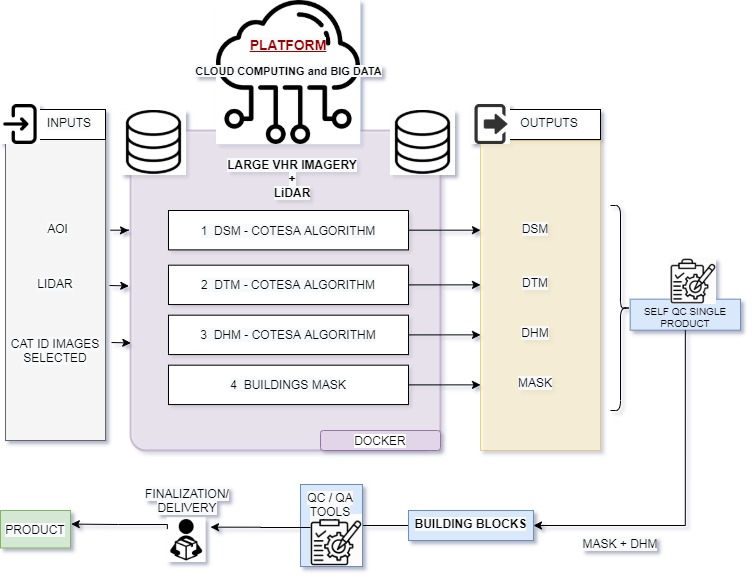
6.1 Defining and refining the AoIs
The AoI (Area of Interest) for the BBHM represents the urban areas of each city or urban centre. It is the combination of Urban Audit cities from 20181 and urban centres from 20112 (also called high-density clusters) available at GISCO3 servers.
The two files were merged and added to the high-density clusters of West Balkans and Turkey delineated in the framework of a previous project since West Balkans and Turkey are not part of GISCO. It represents approximately an area of 198.000km². For simplicity reasons it was decided to call it the City Perimeter described in more detail in 6.1.1.
This initial AoI had to be refined. The process of refining the initial AoI is described below and illustrated in Figure 6‑2.
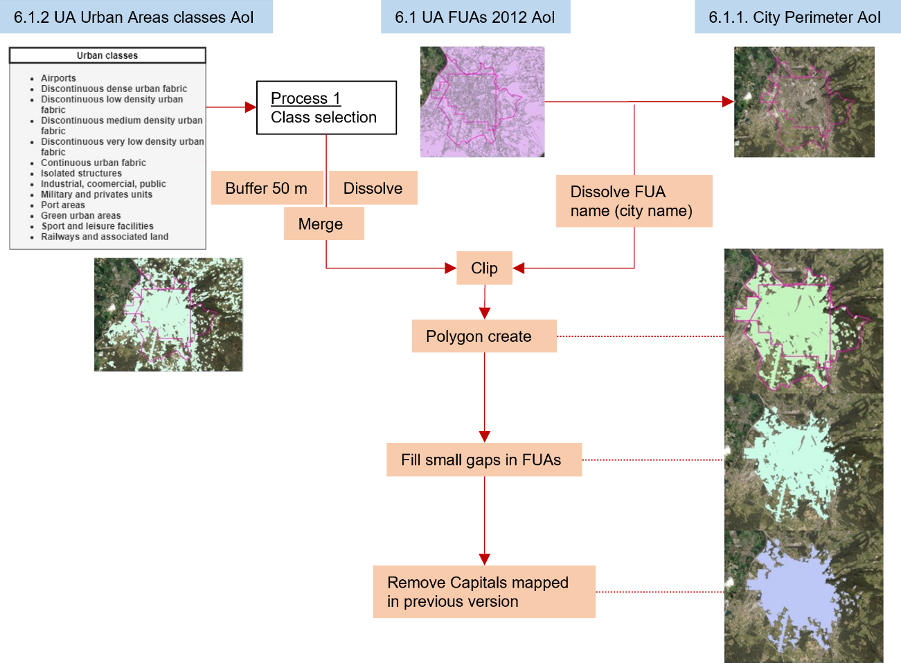
6.1.1 City Perimeter (City + High density clusters polygon)
The City Perimeter is the outer delineation of the merging of the Urban Audit cities for 2018 and “high-density clusters” (also called “urban centres”) for 2011.
All these files originate from different dates but were the best available at the time. The Urban Audit cities are from 2018, the High Density Custers from 2011, while the UA underlying LC/LU data is from 2012 and the satellite information are based on 2012 data, or as close as possible to 2012, see further in chapter 6.2.1.
This AoI was used during the searching of satellite images for the DSMs generation.
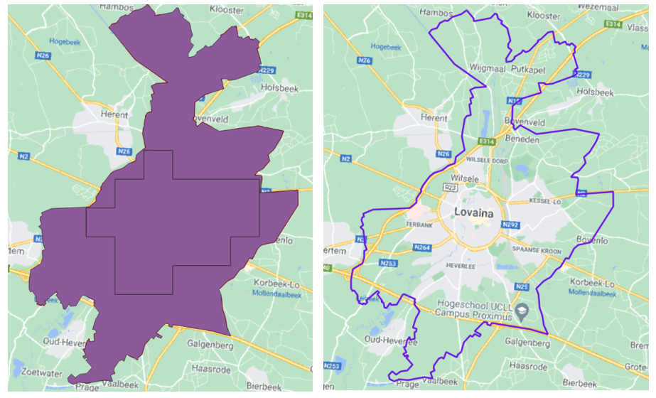
6.1.2 UA Urban Areas Classes
The second step in refining the AoI for the BBHM product is to select the relevant LC/LU classes from Urban Atlas where buildings are expected to be found, i.e., any classes belonging to codes 1XXXX, but not for example forests or pastures or any of the classes with codes 2XXXX-5XXXX. For reference, the nomenclature of Urban Atlas LC/LU product can be found in pages 19-21 of the Nomenclature guideline4.
The selected classes from the Urban Atlas representing urban areas can be seen below:
Airports
Discontinuous dense urban fabric (S.L.: 50% - 80%)
Discontinuous low density urban fabric (S.L.: 10% - 30%)
Discontinuous medium density urban fabric (S.L.: 30% - 50%)
Discontinuous very low density urban fabric (S.L.: < 10%)
Continuous urban fabric (S.L.: > 80%)
Isolated structures
Industrial, commercial, public, military and private units
Port areas
Green urban areas
Railways
Sports and leisure facilities
This AoI (UA Urban Areas Classes) is used to clip the City Perimeter AoI, to represents areas where buildings are expected within the defined City Perimeter AoI.
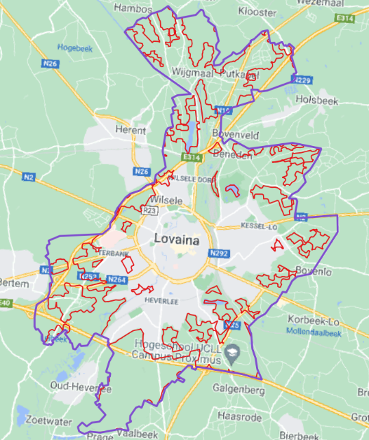
A buffer of 50 m is added around the borders to avoid border errors, see Figure 6‑5.
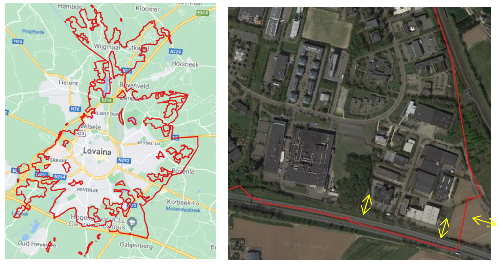
The result is the UA Urban Areas classes + 50 m mapped within the City Perimeter boundaries. The polygons within this shapefile are then checked for small gaps, which are filled.
Whenever UA LC/LU classes were missing within the City Perimeter of a selected city, these missing polygons were manually created and added. In some cases, the same UA Urban Areas classes were included in two separate cities. Depending on factors like distance between the cities, FUA codes and city codes in UA, these cities have either been considered one and the same (when close together for example) or separate cities (for example when there is a big distance between them, or the cities have different city codes in the UA).
The previous release of the BBHM included 38 European capital cities. These areas have not been remapped in this release, except for in cases where new areas have been added to the city’s FUA (a total of 13).
The total number of cities mapped in this release of the BBHM is 845.
6.1.3 UA roads, water, and wetland
An additional shapefile extracted from UA is created including the UA classes of: Other roads and associated land, Water or Wetlands, see Figure 6‑6. This layer is useful to eliminate pixels that do not represent buildings.
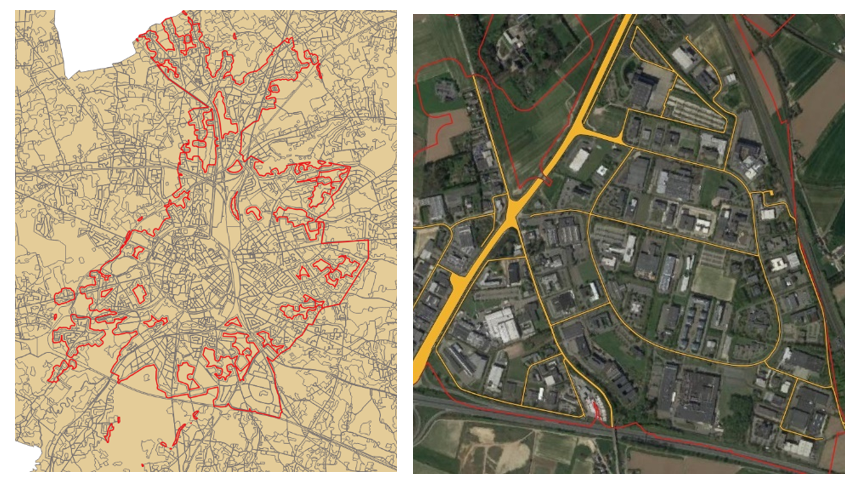
The following example shows the different AoIs applied for the city of Münster, located in the west of Germany. Figure 6‑6 shows the three types of AoIs used in the refinement process Anything in the City Perimeter AoI which does not correspond to buildings is shown in red (will be given the value NoData in the final dataset); the UA Urban Areas Classes AoI are shown in orange (numerical values in dataset if building is present), and the UA roads, water, and wetland AoI is shown in pink.
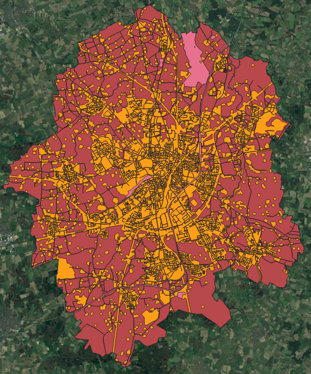
6.1.4 Building Footprints
Building Footprints represent the individual constructions that were present in 2012 within the Urban Atlas. The Building Footprints layer is obtained by applying an elaborated Python algorithm to the selected high resolution satellite images, which leverages a semantic segmentation model to extract and separate individual buildings in densely compacted areas. The algorithm considers the pixel information of the multispectral and panchromatic images.
Convolutional neural networks (CNN) architecture is used for semantic segmentation of building footprints from multispectral images, and to label every pixel in the images. After each convolution layer an extra batch normalization layer will be added to avoid any extreme values, reducing sensitivity towards initial weights and reduce overfitting of the model.
Basic morphological operation on binary data will be used for noise removal. Thereafter a Local Maxima approach will be used to separate connected buildings, by allocating local maxima and higher weight to the larger area out of building and connection. The Local Maxima is used as input source/sink in a watershed algorithm used for image segmentation. Each building obtained from this process is given a unique index for further processing. The result is a raster.
For areas with dense vegetation, the algorithm might generate some confusing pixels. Therefore, a review of the Building Footprints layer has been carried out for areas with dense vegetation. Hereafter a quality control is conducted to verify that no buildings or constructions were excluded, and to discard false positives.
The raster is then vectorized. Spatial references and coordinate systems are preserved at every step and are transferred to vector file for correct overlaying. While converting from raster to vector, the output has a lot of vertices and noises. The vector is then simplified using Douglas-Peucker algorithm (David Douglas, 1973) to help preserve the overall geometry of the shape while simplifying number of vertices. Basic attributes like area, perimeter and elevation of the buildings were automatically added. Finally, minimum bounding box was used and saved.
The resulting Building Footprints was later used in the BBHM production as a mask to separate areas with height data values from areas with no height data values, see chapter 6.6. If there is building footprints data available in the area, this will be considered for refining the AoI of each city.
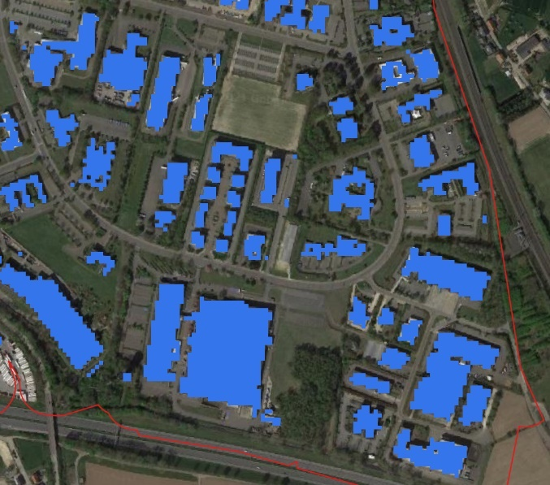
6.2 Data pre-processing
The main input data is comprised of VHR satellite images from 2012, on which the different algorithms for producing the DSM and DTM will be executed, see chapter 6.3 and 6.4. The different sensors used for the VHR image collection are, as shown in Table 5‑2, Worldview 1, 2, 3, Quickbird, Ikonos and Geoeye. The aim is to acquire stereoscopic pair images, overlapping imagery acquired from different locations, to produce a 3D model for the refined AoIs.
The worldwide coverage of stereoscopic pair images is very limited, as it is not the most common and easy data to capture. Satellite data might therefore, despite the vast number of images, not be sufficient to create stereo pair images of all the refined AoIs in the mapped FUAs. Instead, false stereo pair images can be used. False stereo pair images make use of two images taken from different angles, and/or not on the same date or in a simultaneous capture. The images that form the false stereo pair should however be taken as close as possible to each other in time to improve the correlation between them, which increases precision. This approach guarantees coverage of all the refined AoIs with images from different dates. To create false stereo pairs the VHR satellite images from MAXAR products are supported with Copernicus satellite images through Copernicus Reference Access Data (CORDA), and as a further option LiDAR information.
In cases where no satellite image close to year 2012 is available, and also no images from CORDA, the search date range is expanded, primarily around 2012 (Q4 for 2011 or Q1 for 2013) and secondarily for later years (2014 onwards) as later years have more available satellites (WV3 etc.) from which data imagery can be gathered.
The process of selecting suitable VHR, CORDA and LiDAR imagery was based on the following key factors:
Imagery availability from the MAXAR Catalogue, CORDA
Date of capture, see detailed description in chapter 6.2.1
Off-Nadir Angle and Cloud Cover, see detailed description in chapter 6.2.2
6.2.1 Date of capture
The following are the relevant scenarios for fulfilling the “Date of capture”-criteria for the selection of VHR and LiDAR images:
Scenario 1: The best option for selection of images is the use of LiDAR information from dates as close as possible to 2012, when available. This scenario shows better results since there is more density and precision.
Scenario 2: The second best option is images from 2012 taken in the same month and in the same day. Part of the area has been reviewed and is covered with images from 2012. Where images are not available, LiDAR information from 2012, or on a date as close as possible to 2012, will be prioritized for generating the BBHM.
Scenario 3: The third best option is to use images from 2012 captured in the same month but on different days.
Scenario 4: The fourth best option is using images from second half of 2011 or first half of 2013 in the same month and in the same day.
Scenario 5: The fifth best option is images from 2012 with a difference in date of capture of approximately 1 month.
Scenario 6: Scenario 2 but in the first part of 2011 or in the second part of 2013
Scenario 7 (extra): Images from 2014, 2015 and 2016… until today of similar dates (i.e. captured on the same day or week). It has been shown that images of the same season and similar date give good results for obtaining elevation models even though the dates differ by one year. The only thing that would affect this scenario is in terms of large changes in apples that were not in one of the years being analyzed. In this scenario, an analysis of change between the two dates will be made. Thanks to the refinement of the AoI the commission and omission error will be minimized because the Refined AoI is focused on the Urban Areas.
The images are selected and downloaded from the MAXAR library and organized in pairs of images for each city. The images are separated by CAT IDs, which is a unique code for each image. Images were then quality controlled for errors, reviewed and validated for use, as well as merged to ease the further processing of the images. This phase generates as a result a list of selected images to be used in the next analysis, where the algorithms for creating the DSM and DTM are applied.
6.2.2 Off-Nadir Angle and Cloud Cover
The most suitable satellite images were selected, in the case of Off-Nadir angle, based on base-to-height ratio, Convergence, BIE and Asymmetry Angle. If these values, when estimated, are not in the correct range, the DSMs are not correctly built.
6.2.2.1 Off-Nadir Angle
The best is to have images with an Off-Nadir angle of 20 degrees. Pairs formed with images that have less than 5 degrees or more than 45 degrees Off-Nadir angle give bad results, and are discarded. As far as possible, images with Off-Nadir angles of more than 40 degrees have been avoided. From these criteria two scenarios are made:
Scenario 1: Pair of satellite images with Off-Nadir angles of between 10 and 20 degrees
Scenario 2: Satellite images with Off-Nadir angles of between 5 and 30 degrees, preferably between 5 and 20 degrees
For urban areas, large angles of convergence would lead to ground occlusions, as well as a loss of similarity between the two images that form the “stereo pair” and, consequently, a worsening of the process of searching for homologous points by automatic correlation (matching). For these reasons, small Base/Height (B/H) ratios are preferred in urban areas (Eckert and Hollands, 2010). Using an algorithm that considers the maximum and minimum incidence angle, the time difference of the images, the angle between the two images and the region of interest, a Pearson’s correlation matrix and a B/H coefficient as a function of the orbital geometric parameters of the image, as well as temporal parameters are obtained, thanks to which it is possible to find which “false stereo pair” image is the most suitable to use in the generation of the DSM, see chapter 6.3.
The selected false stereo pair images have an angle difference of 20 degrees and none of them beyond 35 degrees.
6.2.2.2 Cloud cover
The aim is to generate cloud-free results, for this reason all scenes were selected, regardless of cloud cover. This approach maximized the results, facilitating the selection of the best scenarios. In case some scattered cloudiness was found in an image, a proprietary cloud masking algorithm based on multilayer neural networks was applied. If clouds covered buildings in an image, this image was discarded. In case some scattered cloudiness could be found, a proprietary cloud masking algorithm based on multilayer neural networks was applied.
6.3 Generating the DSM
Based on the (false) stereo pair images, a digital surface model (DSM) is generated, which represents the height of all objects above the earth’s surface, i.e. plant/forest canopy or the top of artificial constructions such as buildings.
The major steps in creating the DSM are:
Selection of suitable (false) stereo pair images
Pixel-wise stereo correspondence
Void filling
Automated outlier detection and removal
3D point cloud creation, including RPC improvement
Projection, alignment and homogenisation of the 3D point cloud
Process QA
The avaiable false stereo pair images for a certain AoI, obtained through the process described in chapter 6.2, are further processed to generate the DSM. The method for generating the DSM is based on taking elevations from the terrain using the false stereo pair satellite images, and by choosing the most suitable false stereo pair images. The images chosen are panchromatic with high spatial resolution of 30, 40 or 50 cm, and RPC information.
Thereafter a stereo correspondence between the two chosen images that make up each false stereo image pair is conducted, using a patented-modified version of the Semi-Global Matching (SGM) algorithm. The algorithm is based on global energy minimization that comprises a cost of equalization in pixels and smoothness terms in disparity mapping. The algorithm then applies a 3-kernel median filter to fill in small holes in null match points in the disparity map. By implementing a version of the classic RANdom SAmple Consensus (RANSAC) based on reverse methodology, outliers are eliminated.
Lastly, a 3D point cloud is obtained by triangulating the stereo correspondences between the two panchromatic VHR images, taking into consideration the rational polynomial coefficients (RPC) camera model provided for each image. The RCPs will allow triangulating the position of a 3D point identified on an image pair. This elaboration of the Digital Surface Models (DSM) is carried out using an AI-EOSURFACE algorithm on Python and C++ (and compatible with C heads) based on the epipolar geometry of a given pair of satellite images, see Figure 6‑9.
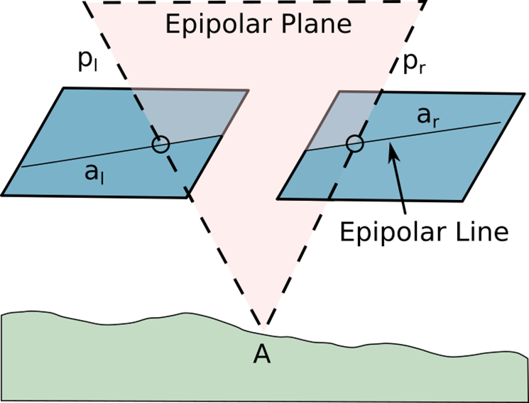
This algorithm has been developed for the DSM generation based on the bidimensional couple of points of a pair for the later three-dimensional densification. The dataset includes images from different platforms, all of them with a spatial resolution of 0.5 m. The DSM generation only requires the panchromatic band, however RGB and NIR bands were included as these are required for other processes of the BBHM creation.
The independently calculated 3D point cloud is then projected, aligned and homogenized, and the DSM is generated with a spatial resolution of 50 cm, and all DSMs are transformed to an orthometric height because to transform height data into meters of above sea level.
6.4 Generating the DTM
Digital terrain models (DTMs) represent the height of the bare earth’s surface. In this case, the DTMs are generated from the DSM. Non-ground features such as buildings, trees, bushes and vehicles have to be identified, and their height measurements removed from the data before interpolation. Once the DSM has been generated, it is filtered using a building emptying algorithm and removing objects that are not bare ground. Thereafter a pixel level prediction and clustering approach is used on a high-resolution multispectral image to detect the bare terrain.
The DTM is carried out using an AI-EOTERRAIN algorithm on Python to process each row of the given DSM separately in all directions in a window with a given extent, considering the minimum value of each row as the position of the ground. Therefore, if the pixel being evaluated has a large difference with the minimum value, the pixel is considered as not corresponding to ground, as well as when the slope between the evaluated pixel and the next one is positive and above a predefined threshold. If the slope is positive but less than the threshold, the evaluated pixel gets the same label as the pixel evaluated in the previous iteration. If the slope is less or equal, the distance to the nearest ground point is used to decide whether the evaluated pixel is classified as ground or not.
The building extraction process was successful with most buildings, however, in buildings that occupy a large area, the algorithm interprets the innermost areas of the roofs as ground values, due to the homogeneity of the slopes. To ensure that all values of the emptied DSM correspond to ground values, a second filtering is done using the buildings footprints layers, see chapter 6.1.4.
DSM algorithm | Building footprints | DSM filtered
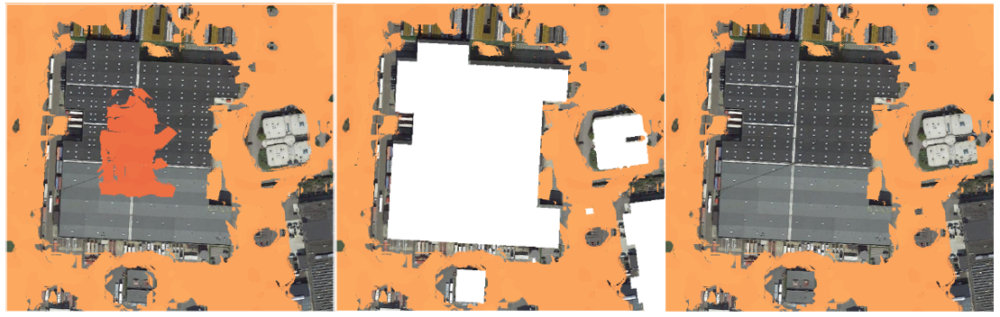
Thereafter the remaining bare ground is filtered by a cut off range for objects to remain in the DTM. This is based on the gradient difference, the size of the object to be removed and the terrain type, this can be either flat or hilly. A “bump and pit”-filter is applied to smoothe the DTM by removing small pits and bumps in the landscape; a median filter which is part of the final smoothing of the DTM; and finally the clamp filter, which stabilizes portions of the elevation model by raising and lowering pixels within a defined threshold.
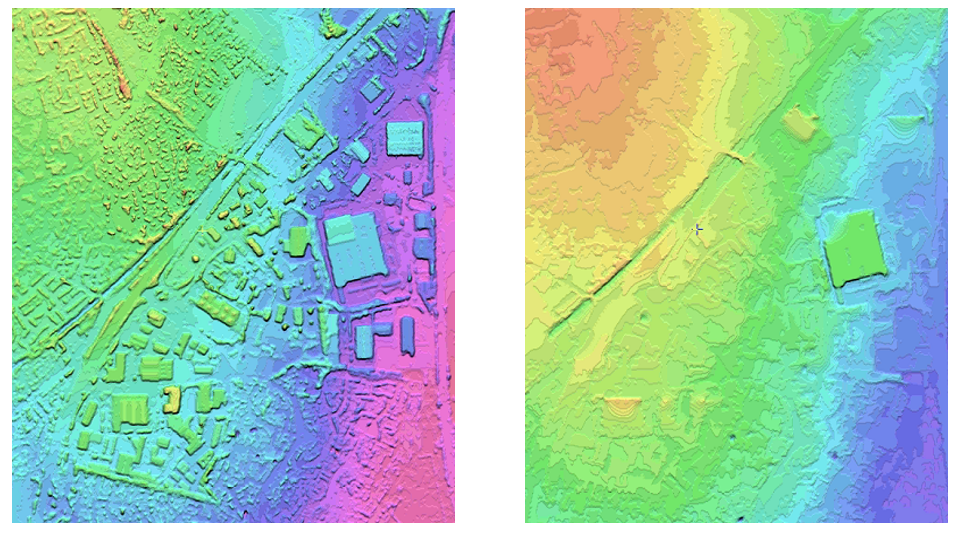
The generated file retains the same properties as the DSM in terms of extension and spatial resolution.
6.5 Generating the DHM
Through a subtraction between the DSM and DTM by means of raster file algebra, and nearest value resampling for the Digital Height Model (DHM) file is obtained.
The result of the operation of generating the DHM is a GeoTIFF raster file that represents the height values of the entire area encompassed by the AoI, layers that are not of interest are given a value of 0 for now. Figure 6‑12 shows the resulting DHM derived from this process.
DSM | DTM | DHM
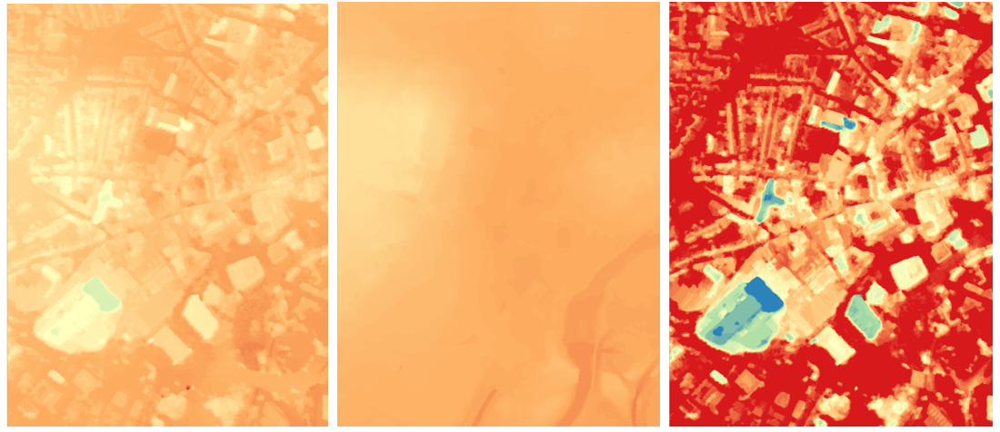
The result of the operation is one DHM file per city and per image pair, in Int32 format.
6.6 Generating the BBHM
Once the DHM of the city is available, it is necessary to extract only the height values that correspond to buildings. To do this, first all the buildings are detected from the available multispectral VHR images, using machine learning techniques. Then a building footprint extraction operation is performed, obtaining a GeoTIFF raster layer with the height values of the buildings, and with a NoData value for all those elements which are not buildings.
To extract the values that correspond to buildings, the vector files of the building footprints and the DHM files are required as input.
Since the building footprints layer are in vector format with complex geometries, these are transformed into Boolean raster format, where the pixels with zero values represent the areas that do not include buildings.
Once the DHM file and its associated building footprints file are both available in raster format and with the same extension, a multiplication is performed, resulting in a DHM with height values only in the areas occupied by buildings. Finally, all pixels with zero in height value, i.e. the height assigned to all elements other than buildings, are reclassified to a NoData value, as otherwise they could have a negative influence on subsequent processes. This is an important difference to note between the 2006 and 2012 edition of the BBHM. It was introduced in this release since in the previous release it was not possible to distinguish between satellite measured zero values, and zero values assigned because of the type of area. Instead, in this release, all areas not representing buildings have a NoData value.
Finally, the DHM has undergone resampling through a number of filters; reprojection to EPSG3035 coordinate system, removal of pixels outside of the City Perimeter AoI, removal of pixels outside of the UA Urban Areas AoI, removal of pixels within the Urban roads AoI and finally resampling from a resolution of 0.5m to a resolution of 10 m using a majority filter.
This point explains why it is necessary to translate the 0 height data values of the input DHM to NoData, since otherwise the majority of values in a pixel corresponding to a building could be equal to 0 due to the influence of the surrounding street.
It is also important to point out the role played by vegetation in this process, since, as the DSM is derived from stereoscopic images; it is possible that trees near buildings influence the final value of certain pixels.
Also, a reclassification of all pixels with a value lower than 3 m is performed, since it is assumed that no buildings are lower than 3 m.
Finally, a final conversion of the DHM files is executed to adapt them to the requirements set according to CLMS Tools needs.
EPSG:3035 coordinate reference system
GeoTIFF data type UInt16.
No data value equal to 65535.
Compression type LZW
Pixel size 10 m
BLOCKSIZE 256x256 Specification
TILED = YES
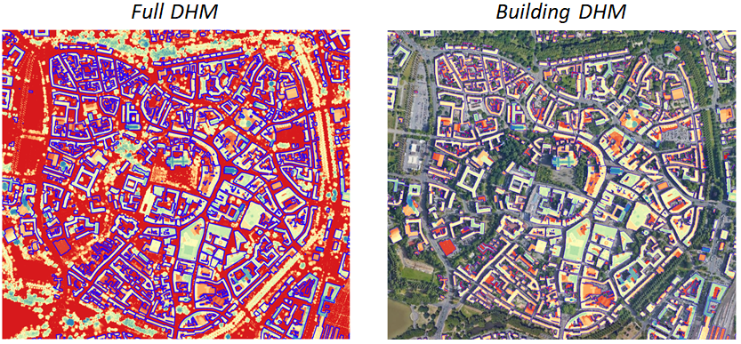
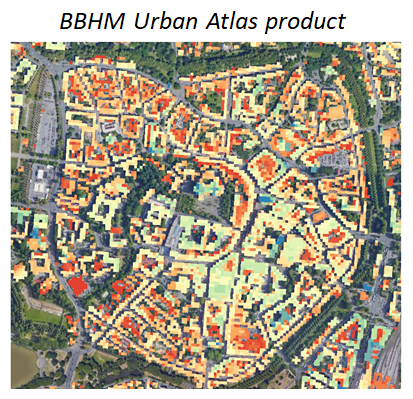
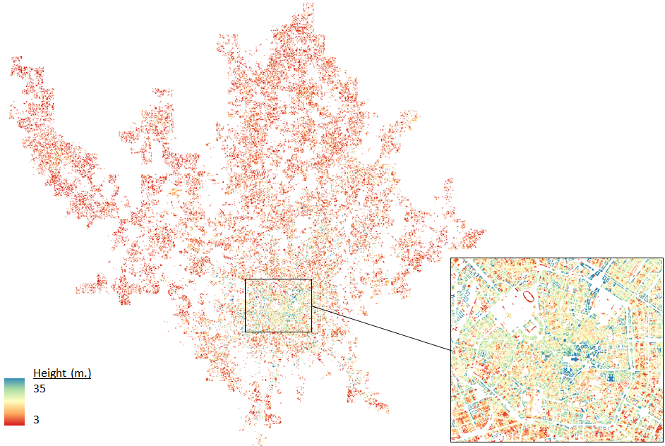
6.7 Characteristics and limitations of the product
This chapter describes the properties of the product and some methodological aspects that are important to understand the characteristics and limitations of the product.
It is important to note that because the DSMs are derived from LiDAR and VHR satellite information, the initially generated DHMs have a spatial resolution of between 0.5 and 2 meters. For the final product to comply with EEA technical requirements (spatial resolution of 10 meters), a resampling operation was performed to transform the DHM pixels from 0.5-2 m to 10 m.
For this transformation to be consistent with the first height values obtained, it was agreed to use a majority algorithm, i.e. the calculation will determine the most common value shown by the 0.5 - 2 m pixels contained within a new 10 m pixel, which will be assigned the most repeated value after the execution of this analysis.
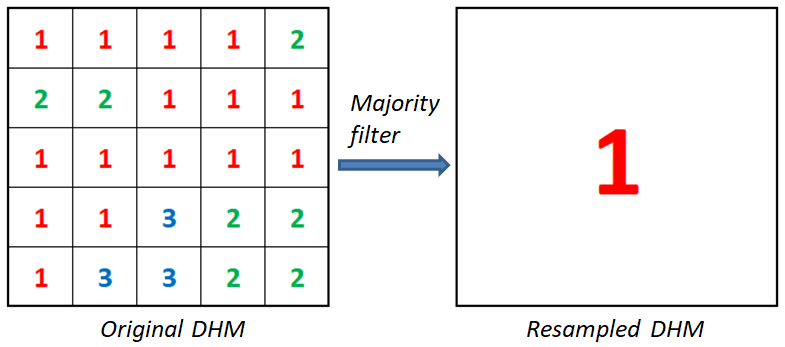
It is this simple resampling operation that poses the main limitations of the BBHM Urban Atlas product, which are further detailed below.
- No height values in buildings that are smaller that the minimum mapping size
Due to the spatial resolution of the pixel, there will be a NoData value in buildings smaller than 100 m2, such as single-family houses, buildings for public use etc., see example in Figure 6‑17.
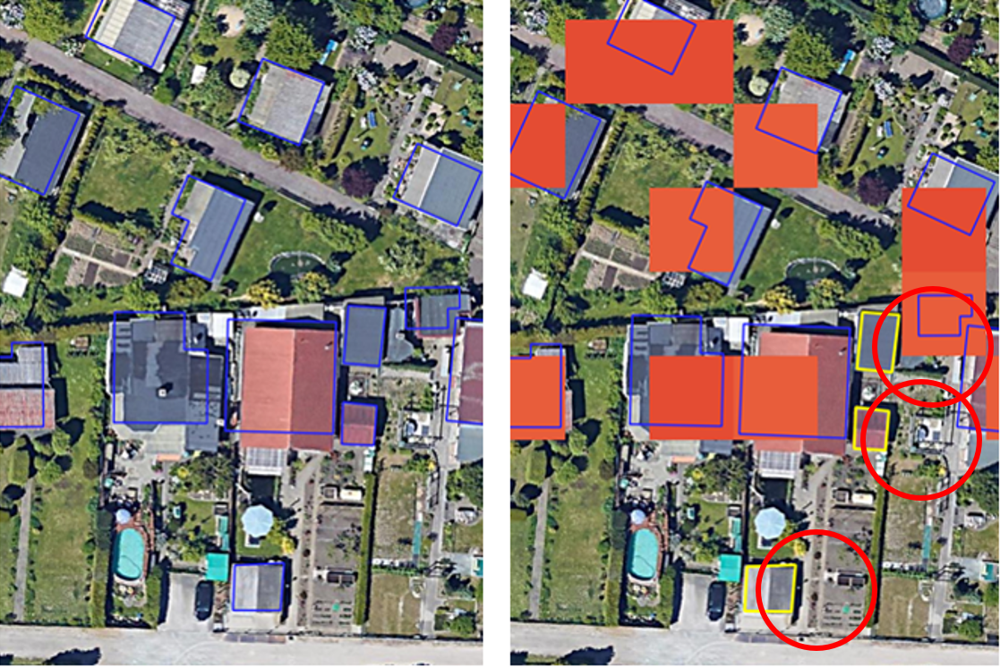
- Issues on building edges
The influence of height values of elements or artifacts adjacent to the buildings can induce abnormally high or low values in the pixels of the edges of the buildings. In case of influence of the ground abnormally low values would be presented, or abnormally high values if it is a tree or other vertical element that interferes.
This happens, in addition to the majority algorithm, when extracting the height values within the building footprints. This is because it is very unusual that the outline of the building represented in the DHM coincides exactly with its building footprint, which causes the edge pixels to be retained in the DHM prior to the resampling process and, therefore, may interfere with the final result.
The example in Figure 6‑18 shows the height values obtained for a random building, in this case obtained by means of LIDAR technology, with a spatial resolution of 2 m.
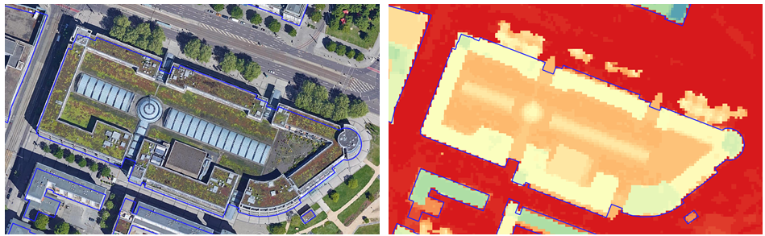
Figure 6‑19 shows how some pixels, with ground elevation information, are represented in red tones after extraction of the DHM values in relation to the building footprints.
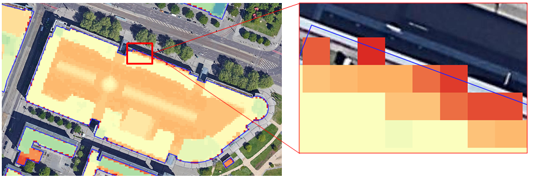
When the resampling operation is performed and the final result is obtained, this ground elevation information is transferred to the pixels that make up the building boundary, causing the aforementioned alterations in the value of these pixels.
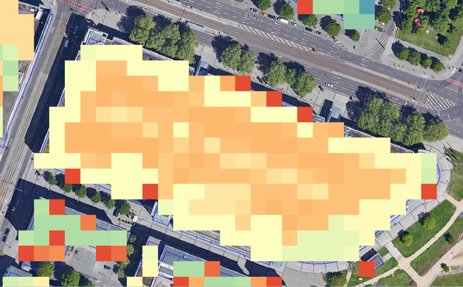
Without a detailed case-by-case study it is not possible to conclude wheter these height deviations are caused by elements of the building itself or by influences from the ground or other artifacts. Thus, these pixels have not been corrected beyond those clearly identified during QC, which is the main limitation of the project.
The influence of edge elements becomes more noticeable in cities whose DHM values have been calculated from a DSM derived from VHR satellite imagery. This is because optical satellite photogrammetry technology does not reach the same levels of accuracy as achieved by LIDAR, and its results depend heavily on the acquisition properties of the images. Especially important are the angles and the correlation calculated between the two images, giving the results a more continuous and smooth appearance, i.e. there is no perfect detection of abrupt elevation changes intrinsic to the height difference between a building and the ground.
This behavior is especially noticeable in cities with a high density of buildings, close together, separated by narrow streets, typical in urban centers of historic cities. This combined with the resampling algorithm can result in areas with apparently great variability of building heights. This phenomenon can be observed in Figure 6‑21.
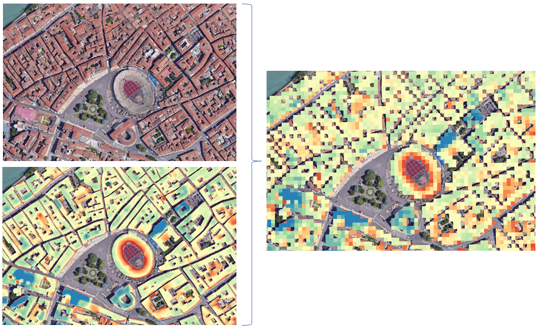
- Roof artifacts
Another limitation of the product lies in the poor response to the LIDAR pulses of some roofs, especially noticeable in the metal cladding that covers some industrial buildings. These errors do not occur when using satellite photogrammetry and thus do not pose an issue in most of the processed cities. To correct the errors, the erroneous pixels are manually reclassified with the correct elevation value.
- Limitation of building footprints detection in scattered areas
The building footprints identification algorithm based on Machine Learning techniques has certain limitations when detecting isolated buildings, especially in rural environments, since the algorithm considers certain properties of coherence and spatial context for the identification of buildings. In the same way, the algorithm may present commission errors, which have been eliminated whenever they have been detected during QC.
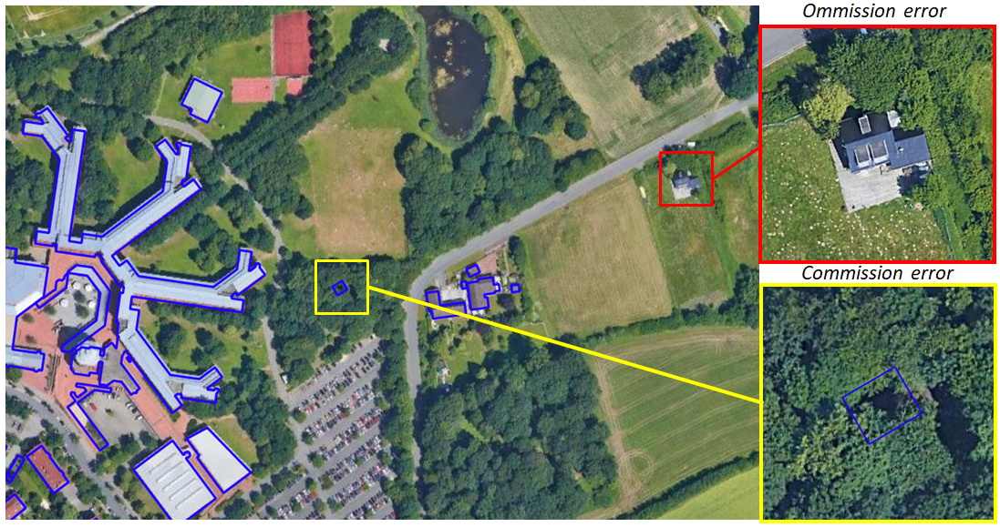
- Urban Areas with no values outside the AoI
As stated previously in the document, building height values are only gathered inside the AoI (see definition in chapter 6.1). In some cases, it is not possible to produce building height data for the entire delineation of the AoI, i.e. when part of the defined high-density cluster delineation falls outside the area that has been mapped by Urban Atlas. For example, the AoI for Malinas is a high-density cluster but is not mapped by Urban Atlas and does not have a FUA (no Urban Classes). Thus, it is key to consider that in these cases some urban areas in the city surroundings are not captured, so there is no height value.
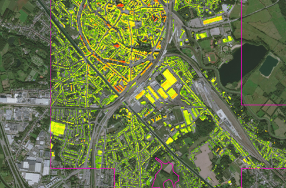
- Limitations of DSM generation
DSM generation from false pair stereo of satellite images is always challenging, since it depends on several variables: off-nadir angle, difference in days between images, cloud cover, etc. These values vary from city to city, but in general terms these have been the main issues:
DSM orthorectification
Building shadows
Small houses’ height
Outlier removal
Water-topography influence
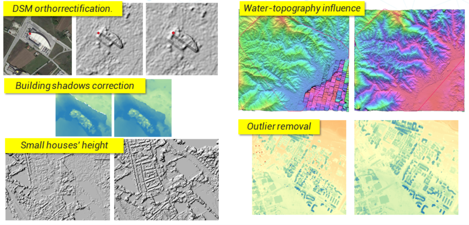
- Limitations on DTM generation
When generating a DTM from DSM, the reliability on the accuracy of the DSM falls, e.g. a DSM derived from a high-density point cloud by using LiDAR information is more reliable than one built from satellite imagery. Also, an automatic algorithm pursues a constant accuracy across different realities, setting parameters to fix values that better capture all. However, larger buildings (e.g. industrial buildings) may not be removed completely, so a manual editing has been carried out in all the cities.
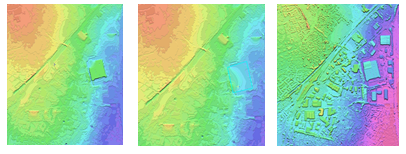
7 Quality Assessment
The UA BBHM product has been produced by service providers with accredited ISO 9001:2015 quality standard management systems. Quality control of the final product level has been divided into the following three stages:
Data completeness check and data compliance with the client guidelines.
Data quality control at building level.
Data quality control at block level.
7.1 QC DSM
Before passing the DSM on to the DTM construction the following checks and corrections are made:
Orthorectification, if errounous this is corrected through georeferencing in QGIS with Google Satellite image for reference
Height conversion (ellipsoidal-orthometric)
Height review between DSM and DTM
Outlier removal, corrected by selecting smaller AoI and generating new DSM without outliers
Limitations (small buildings), if not detected in areas with a lot of vegetation this is corrected by changing the parameters of the smoothing filter in the affected areas
Gap filling, very tall buildings’ shadows cause no data areas and holes in the data mesh between the building and adjacent ground, this is corrected by a data filling algorithm that interpolates the closest values in the building and ground levels to cover these gaps
7.2 QC DTM
Before passing the DTM on to the DHM construction checks and corrections are made through refinement by adding different filters.
7.3 QC DHM
After finalisation each generated DHM file is manually reviewed, verifying that all the constructions identified in the building footprints have an assigned height value consistent with reality. During this manual review, it is also verified that there are no pixels with abnormal height values, relying on the altimetry information provided by Google Earth and Street View.
7.4 Quality Assurance (QA) and Quality Control (QC) measures
Subsequently a third-party quality control is carried out in three stages
Data completeness check and data compliance with the client’s guidelines check
Data quality control at building level
Data quality control at block level
After acceptance of the data by the third party, the data is checked additionally using the CLMS QC Tool, which checks for discrepancies in:
Final delivery files naming
Correctness of metadata with the INSPIRE specification
Raster EPSG code
Raster pixel size
Position of the upper left corner of raster bounding box
Raster bit depth
Raster compression format
Raster value range
Raster tiles
NoData value
The final data were considered valid if no issues were reported from all of the quality control tasks, including both the third party and the CLMS QC Tool controls. The results are shown in the QC report, see chapter 5.2.5.
8 Terms of use and product technical support
8.1 Terms of use
The product(s) described in this document is/are created in the frame of the Copernicus programme of the European Union by the European Environment Agency (product custodian) and is/are owned by the European Union. The product(s) can be used following Copernicus full free and open data policy, which allows the use of the product(s) also for any commercial purpose. Derived products created by end users from the product(s) described in this document are owned by the end users, who have all intellectual rights to the derived products.
8.2 Citation
In cases of re-dissemination of the product(s) described in this document or when the product(s) is/are used to create a derived product it is required to provide a reference to the source. A template is provided below:
“© European Union, Copernicus Land Monitoring Service <year>, European Environment Agency (EEA)”
8.3 Product technical support
Product technical support is provided by the product custodian through Copernicus Land Monitoring Service helpdesk at copernicus@eea.europa.eu. Product technical support doesn’t include software specific user support or general GIS or remote sensing support.
9 Abbreviations & acronyms
| AoI | Area of Interest |
| BBHM | Building Block height Model |
| BIE | Bisector Elevation Angle |
| CLMS | Copernicus Land Monitoring Service |
| CNN | Convolutional Neural Networks |
| CZ | Coastal Zones |
| DHM | Digital Height Model |
| DSM | Digital Surface Model |
| DTM | Digital Terrain Model |
| EEA | European Environment Agency |
| EEA38 | EU27, UK, EFTA, West Balkan, and Turkey |
| EFTA | Iceland, Liechtenstein, Norway and Switzerland |
| EPSG | European Petroleum Survey Group Geodesy |
| ESA | European Space Agency |
| EU27 | European Union Countries |
| FUA | Functional Urban Area |
| GDAL | Geospatial Data Abstraction Library |
| GEOSS | Global Earth Observation System of Systems |
| INSPIRE | Infrastructure for Spatial Information in Europe |
| JRC | European Commission DG Joint Research Centre |
| LC/LU | Land Cover / Land Use |
| LiDAR | Light Detection and Ranging, or Laser Imaging Detection and Ranging |
| LZW | Lempel–Ziv–Welch (universal lossless data compression algorithm) |
| N2K | Natura 2000 |
| RPC | Rational Polynomial Correspondence |
| RZ | Riparian Zones |
| SEIS | Shared Environmental Information System |
| UA | Urban Atlas |
| VHR | Very High-Resolution |
10 References
Alexander, C. (2021). Influence of the proportion, height and proximity of vegetation and buildings on urban land surface temperature. International Journal of Applied Earth Observation and Geoinformation, 95, 102265. doi:https://doi.org/10.1016/j.jag.2020.102265
Bálint Papp, G. K. (2021). Measurement-driven Large Eddy Simulation of dispersion in street canyons of variable building height. Journal of Wind Engineering and Industrial Aerodynamics, 211, 104495. doi:https://doi.org/10.1016/j.jweia.2020.104495
Burak Güneralp, Y. Z.-V. (2017, 08 22). Global scenarios of urban density and its impacts on building energy use through 2050. Proceedings of the National Academy of Sciences, 114(34), 8945-8950. Retrieved from https://www.pnas.org/doi/full/10.1073/pnas.1606035114
D. Ehrlich, T. K. (2018). Built-up area and population density: Two Essential Societal Variables to address climate hazard impact. Environmental Science & Policy, 90, 73-82. doi:https://doi.org/10.1016/j.envsci.2018.10.001
David Frantz, F. S. (2021). National-scale mapping of building height using Sentinel-1 and Sentinel-2 time series. Remote Sensing of Environment, 252, 112128. doi:https://doi.org/10.1016/j.rse.2020.112128
Dijkstra, L. H. (2019). The EU-OECD definition of a functional urban area. Paris: OECD Publishing. doi:https://doi.org/10.1787/d58cb34d-en
Eirik Resch, R. A. (2016). Impact of Urban Density and Building Height on Energy Use in Cities. Energy Procedia, 96, 800-814. Retrieved from https://doi.org/10.1016/j.egypro.2016.09.142
European Commission. (2019, October 25). Copernicus. Retrieved from Copernicus: https://www.copernicus.eu/sites/default/files/2019-10/STAFF_WORKING_PAPER_2019-394-Expression_of_User_Needs_for_the_Copernicus_Programme.pdf
Isabelle Y.S. Chan, A. M. (2018). Effects of neighborhood building density, height, greenspace, and cleanliness on indoor environment and health of building occupants. Building and Environment, 145, 213-222. doi:https://doi.org/10.1016/j.buildenv.2018.06.028
Jiayu Li, B. Z. (2022). Effects of residential building height, density, and floor area ratios on indoor thermal environment in Singapore. Journal of Environmental Management, 313, 114976. doi:https://doi.org/10.1016/j.jenvman.2022.114976
Kleemann, F. L. (2017). GIS-based Analysis of Vienna’s Material Stock in Buildings. Journal of Industrial Ecology, 21, 368-380. Retrieved from https://doi.org/10.1111/jiec.12446
OECD. (n.d.). OEDC Regional Development Working Papers. Retrieved from OECD iLibrary: https://www.oecd-ilibrary.org/urban-rural-and-regional-development/the-eu-oecd-definition-of-a-functional-urban-area_d58cb34d-en;jsessionid=8xgrmauDYjql1loQjFz8UbbwH_LUEPYyPXF2QVSv.ip-10-240-5-97
Thomas Esch, E. B.-L.-M. (2022). World Settlement Footprint 3D - A first three-dimensional survey of the global building stock. Remote Sensing of Environment, 270, 112877 . Retrieved from https://doi.org/10.1016/j.rse.2021.112877
Tian, Y. Z. (2019, May 01). The effect of urban 2D and 3D morphology on air temperature in residential neighborhoods. Landscape ecology, 34, 1161-1178. doi:https://doi.org/10.1007/s10980-019-00834-7
Wu, T. P. (2017). Economic growth, urbanization, globalization, and the risks of emerging infectious diseases in China: a review. Ambio, 46, 18–29. doi:https://doi.org/10.1007/s13280-016-0809-2
Xu M, C. C. (2020). Mapping Fine-Scale Urban Spatial Population Distribution Based on High-Resolution Stereo Pair Images, Points of Interest, and Land Cover Data. Remote Sensing, 12(4), 608. Retrieved from https://doi.org/10.3390/rs12040608
Yu, G., Xie, Z., Li, X., Wang, Y., Huang, J., & Yao, X. (2022, April). The potential of 3-D Building Height Data to Characterize Socioeconomic activities: A Case Study from 38 Cities in China. Remote Sensing, 14 (9), 2087. doi:10.3390/rs14092087
Yunhao Chen, J. W. (2020). Evaluating the impact of the building density and height on the block surface temperature. Building and Environment, 168, 106493. Retrieved from https://doi.org/10.1016/j.buildenv.2019.106493
Zander S. Venter, O. B. (2020). Hyperlocal mapping of urban air temperature using remote sensing and crowdsourced weather data. Remote Sensing of Environment, 242, 111791. doi:https://doi.org/10.1016/j.rse.2020.111791
Zhong Zheng, W. Z. (2019). The higher, the cooler? Effects of building height on land surface temperatures in residential areas of Beijing. Physics and Chemistry of the Earth, Parts A/B/C, 110, 149-156. doi:https://doi.org/10.1016/j.pce.2019.01.008
11 Annexes
11.1 Annex 1 – List of cities mapped
| Country code | City name |
|---|---|
| AL | ELBASAN |
| AL | SHKODER |
| AL | VLORE |
| AL | TIRANA |
| AT | GRAZ |
| AT | LINZ |
| AT | SALZBURG |
| AT | INNSBRUCK |
| AT | KLAGENFURT |
| AT | BREGENZ |
| AT | WIEN |
| BA | BANJA LUKA |
| BA | MOSTAR |
| BA | TUZLA |
| BA | ZENICA |
| BA | SARAJEVO |
| BE | ANTWERPEN |
| BE | GENT |
| BE | CHARLEROI |
| BE | LIÈGE |
| BE | BRUGGE |
| BE | NAMUR |
| BE | LEUVEN |
| BE | MONS |
| BE | KORTRIJK |
| BE | OOSTENDE |
| BE | MALINAS |
| BE | LA LOUVIÈRE |
| BE | VERVIERS |
| BE | BRUXELLES BRUSSEL |
| BG | PLOVDIV |
| BG | VARNA |
| BG | BURGAS |
| BG | PLEVEN |
| BG | RUSE |
| BG | VIDIN |
| BG | SLIVEN |
| BG | DOBRICH |
| BG | SHUMEN |
| BG | YAMBOL |
| BG | HASKOVO |
| BG | PAZARDZHIK |
| BG | BLAGOEVGRAD |
| BG | VRATSA |
| BG | SOFIA |
| BG | STARA ZAGORA |
| BG | VELIKO TARNOVO |
| CH | ST GALLEN |
| CH | ZÜRICH |
| CH | GENÈVE |
| CH | BASEL |
| CH | LAUSANNE |
| CH | WINTERTHUR |
| CH | LUZERN |
| CH | LUGANO |
| CH | BIEL BIENNE |
| CH | THUN |
| CH | FRIBOURG |
| CH | BERN |
| CY | LARNACA |
| CY | LEMESOS |
| CY | LEFKOSIA |
| CZ | PRAHA |
| CZ | BRNO |
| CZ | OSTRAVA |
| CZ | PLZEŇ |
| CZ | HRADEC KRÁLOVÉ |
| CZ | OLOMOUC |
| CZ | LIBEREC |
| CZ | KARLOVY VARY |
| CZ | CHOMUTOV JIRKOV |
| CZ | PARDUBICE |
| CZ | ZLÍN |
| CZ | JIHLAVA |
| CZ | MOST |
| CZ | ÚSTÍ NAD LABEM |
| CZ | ČESKÉ BUDĚJOVICE |
| DE | FRANKFURT AM MAIN |
| DE | OLDENBURG |
| DE | HAMBURG |
| DE | MÜNCHEN |
| DE | KÖLN |
| DE | HALLE AN DER SAALE |
| DE | STUTTGART |
| DE | LEIPZIG |
| DE | DRESDEN |
| DE | BREMEN |
| DE | DÜSSELDORF |
| DE | HANNOVER |
| DE | NÜRNBERG |
| DE | BIELEFELD |
| DE | FREIBURG IM BREISGAU |
| DE | MAGDEBURG |
| DE | WIESBADEN |
| DE | GÖTTINGEN |
| DE | DARMSTADT |
| DE | TRIER |
| DE | FRANKFURT ODER |
| DE | REGENSBURG |
| DE | WEIMAR |
| DE | SCHWERIN |
| DE | ERFURT |
| DE | AUGSBURG |
| DE | BONN |
| DE | KARLSRUHE |
| DE | MÖNCHENGLADBACH |
| DE | MAINZ |
| DE | RUHRGEBIET |
| DE | KIEL |
| DE | SAARBRÜCKEN |
| DE | KOBLENZ |
| DE | ROSTOCK |
| DE | KAISERSLAUTERN |
| DE | ISERLOHN |
| DE | WILHELMSHAVEN |
| DE | TÜBINGEN |
| DE | FLENSBURG |
| DE | MARBURG |
| DE | KONSTANZ |
| DE | NEUMÜNSTER |
| DE | DESSAU ROSSLAU |
| DE | GIESSEN |
| DE | LÜNEBURG |
| DE | BAYREUTH |
| DE | CELLE |
| DE | ASCHAFFENBURG |
| DE | BAMBERG |
| DE | PLAUEN |
| DE | NEUBRANDENBURG |
| DE | FULDA |
| DE | BOCHOLT STADT |
| DE | LANDSHUT |
| DE | ROSENHEIM |
| DE | STRALSUND |
| DE | FRIEDRICHSHAFEN |
| DE | OFFENBURG |
| DE | GÖRLITZ |
| DE | SCHWEINFURT |
| DE | GREIFSWALD |
| DE | WETZLAR |
| DE | PASSAU |
| DE | BRAUNSCHWEIG |
| DE | MANNHEIM |
| DE | MÜNSTER |
| DE | CHEMNITZ |
| DE | AACHEN |
| DE | KREFELD |
| DE | LÜBECK |
| DE | KASSEL |
| DE | SOLINGEN |
| DE | OSNABRÜCK |
| DE | HEIDELBERG |
| DE | PADERBORN |
| DE | WÜRZBURG |
| DE | BREMERHAVEN |
| DE | HEILBRONN |
| DE | REMSCHEID |
| DE | ULM |
| DE | PFORZHEIM |
| DE | INGOLSTADT |
| DE | GERA |
| DE | REUTLINGEN |
| DE | COTTBUS |
| DE | SIEGEN |
| DE | HILDESHEIM |
| DE | ZWICKAU |
| DE | WUPPERTAL |
| DE | JENA |
| DE | GUTERSLOH |
| DE | BERLIN |
| DE | VILLINGEN SCHWENNINGEN |
| DE | BRANDENBURG AN DER HAVEL |
| DE | DÜREN STADT |
| DE | KEMPTEN ALLGÄU |
| DK | ÅRHUS |
| DK | ODENSE |
| DK | AALBORG |
| DK | KØBENHAVN |
| EE | TARTU |
| EE | NARVA |
| EE | TALLINN |
| EL | THESSALONIKI |
| EL | PÁTRA |
| EL | IRAKLEIO |
| EL | LARISA |
| EL | VOLOS |
| EL | IOANNINA |
| EL | KAVALA |
| EL | KALAMATA |
| EL | CHANIA |
| EL | XANTHI |
| EL | KATERINI |
| EL | SERRES |
| EL | TRIKALA |
| EL | ATHINA |
| ES | LAS PALMAS |
| ES | PALMA DE MALLORCA |
| ES | SANTIAGO DE COMPOSTELA |
| ES | TALAVERA DE LA REINA |
| ES | SANTA CRUZ DE TENERIFE |
| ES | BARCELONA |
| ES | VALENCIA |
| ES | SEVILLA |
| ES | ZARAGOZA |
| ES | MÁLAGA |
| ES | MURCIA |
| ES | VALLADOLID |
| ES | JEREZ DE LA FRONTERA |
| ES | CHICLANA DE LA FRONTERA |
| ES | VITORIA GASTEIZ |
| ES | OVIEDO |
| ES | PAMPLONA IRUÑA |
| ES | SANTANDER |
| ES | TOLEDO |
| ES | BADAJOZ |
| ES | LOGROÑO |
| ES | BILBAO |
| ES | CÓRDOBA |
| ES | ALICANTE ALACANT |
| ES | VIGO |
| ES | GIJÓN |
| ES | PUERTO DE LA CRUZ |
| ES | REUS |
| ES | LUGO |
| ES | GIRONA |
| ES | TORREVIEJA |
| ES | CÁCERES |
| ES | SANLÚCAR DE BARRAMEDA |
| ES | AVILÉS |
| ES | CIUDAD REAL |
| ES | PALENCIA |
| ES | FERROL |
| ES | PONTEVEDRA |
| ES | CEUTA |
| ES | GANDIA |
| ES | GUADALAJARA |
| ES | MANRESA |
| ES | BENIDORM |
| ES | MELILLA |
| ES | PONFERRADA |
| ES | ZAMORA |
| ES | SAN SEBASTIÁN DONOSTIA |
| ES | SANTA LUCÍA DE TIRAJANA |
| ES | IRUN |
| ES | ARRECIFE |
| ES | ELDA |
| ES | GRANADA |
| ES | ELCHE ELX |
| ES | CARTAGENA |
| ES | ALMERÍA |
| ES | BURGOS |
| ES | SALAMANCA |
| ES | ALBACETE |
| ES | HUELVA |
| ES | CÁDIZ |
| ES | TARRAGONA |
| ES | LEÓN |
| ES | JAÉN |
| ES | LLEIDA |
| ES | OURENSE |
| ES | ALGECIRAS |
| ES | MARBELLA |
| ES | ALCOY |
| ES | ÁVILA |
| ES | CUENCA |
| ES | EIVISSA |
| ES | LINARES |
| ES | LORCA |
| ES | MÉRIDA |
| ES | SAGUNTO |
| ES | IGUALADA |
| ES | CASTELLÓN DE LA PLANA CASTELLÓ DE LA PLANA |
| ES | A CORUÑA |
| ES | PUERTO DE SANTA MARÍA EL |
| ES | LA LÍNEA DE LA CONCEPCIÓN |
| ES | MADRID |
| FI | TAMPERE TAMMERFORS |
| FI | TURKU ÅBO |
| FI | OULU ULEÅBORG |
| FI | LAHTI LAHTIS |
| FI | KUOPIO |
| FI | JYVÄSKYLÄ |
| FI | HELSINKI |
| FR | PARIS |
| FR | LYON |
| FR | TOULOUSE |
| FR | BORDEAUX |
| FR | NANTES |
| FR | LILLE |
| FR | MONTPELLIER |
| FR | SAINT ETIENNE |
| FR | LE HAVRE |
| FR | RENNES |
| FR | AMIENS |
| FR | NANCY |
| FR | METZ |
| FR | REIMS |
| FR | ORLEANS |
| FR | DIJON |
| FR | POITIERS |
| FR | CLERMONT FERRAND |
| FR | CAEN |
| FR | LIMOGES |
| FR | BESANCON |
| FR | GRENOBLE |
| FR | TOULON |
| FR | VALENCIENNES |
| FR | TOURS |
| FR | ANGERS |
| FR | BREST |
| FR | LE MANS |
| FR | AVIGNON |
| FR | MULHOUSE |
| FR | DUNKERQUE |
| FR | PERPIGNAN |
| FR | NIMES |
| FR | PAU |
| FR | BAYONNE |
| FR | LORIENT |
| FR | MONTBELIARD |
| FR | TROYES |
| FR | SAINT NAZAIRE |
| FR | LA ROCHELLE |
| FR | ANGOULEME |
| FR | BOULOGNE SUR MER |
| FR | CHAMBERY |
| FR | CHALON SUR SAONE |
| FR | CHARTRES |
| FR | NIORT |
| FR | CALAIS |
| FR | BEZIERS |
| FR | ARRAS |
| FR | BOURGES |
| FR | SAINT BRIEUC |
| FR | QUIMPER |
| FR | VANNES |
| FR | CHERBOURG EN COTENTIN |
| FR | TARBES |
| FR | BELFORT |
| FR | ROANNE |
| FR | BEAUVAIS |
| FR | CREIL |
| FR | EVREUX |
| FR | CHATEAUROUX |
| FR | BRIVE LA GAILLARDE |
| FR | ALBI |
| FR | FREJUS |
| FR | CHALONS EN CHAMPAGNE |
| FR | NICE |
| FR | LENS |
| FR | HENIN BEAUMONT |
| FR | DOUAI |
| FR | VALENCE |
| FR | ROUEN |
| FR | MELUN |
| FR | MARTIGUES |
| FR | CHARLEVILLE MEZIERES |
| FR | COLMAR |
| FR | CANNES |
| FR | STRASBOURG |
| FR | AJACCIO |
| FR | ANNEMASSE |
| FR | ANNECY |
| FR | COMPIEGNE |
| FR | SAINT QUENTIN |
| FR | MARSEILLE |
| HR | RIJEKA |
| HR | OSIJEK |
| HR | SPLIT |
| HR | SLAVONSKI BROD |
| HR | ZADAR |
| HR | PULA - POLA |
| HR | GRAD ZAGREB |
| HU | BUDAPEST |
| HU | MISKOLC |
| HU | NYÍREGYHÁZA |
| HU | PÉCS |
| HU | DEBRECEN |
| HU | SZEGED |
| HU | GYÕR |
| HU | KECSKEMÉT |
| HU | SZÉKESFEHÉRVÁR |
| HU | SZOMBATHELY |
| HU | SZOLNOK |
| HU | TATABÁNYA |
| HU | VESZPRÉM |
| HU | BÉKÉSCSABA |
| HU | KAPOSVÁR |
| HU | EGER |
| HU | DUNAÚJVÁROS |
| HU | ZALAEGERSZEG |
| HU | SOPRON |
| IE | CORK |
| IE | LIMERICK |
| IE | GALWAY |
| IE | WATERFORD |
| IE | DUBLIN |
| IS | REYKJAVIK |
| IT | LA SPEZIA |
| IT | REGGIO DI CALABRIA |
| IT | ROMA |
| IT | MILANO |
| IT | NAPOLI |
| IT | TORINO |
| IT | PALERMO |
| IT | GENOVA |
| IT | FIRENZE |
| IT | BARI |
| IT | BOLOGNA |
| IT | CATANIA |
| IT | VENEZIA |
| IT | VERONA |
| IT | CREMONA |
| IT | TRENTO |
| IT | TRIESTE |
| IT | PERUGIA |
| IT | ANCONA |
| IT | PESCARA |
| IT | CAMPOBASSO |
| IT | CASERTA |
| IT | TARANTO |
| IT | POTENZA |
| IT | CATANZARO |
| IT | BUSTO ARSIZIO |
| IT | SASSARI |
| IT | CAGLIARI |
| IT | PADOVA |
| IT | BRESCIA |
| IT | MODENA |
| IT | FOGGIA |
| IT | SALERNO |
| IT | PIACENZA |
| IT | BOLZANO |
| IT | UDINE |
| IT | LECCE |
| IT | BARLETTA |
| IT | PESARO |
| IT | COMO |
| IT | PISA |
| IT | TREVISO |
| IT | VARESE |
| IT | ASTI |
| IT | PAVIA |
| IT | MASSA |
| IT | COSENZA |
| IT | SAVONA |
| IT | MATERA |
| IT | ACIREALE |
| IT | AVELLINO |
| IT | PORDENONE |
| IT | LECCO |
| IT | ALTAMURA |
| IT | BATTIPAGLIA |
| IT | BISCEGLIE |
| IT | CARPI |
| IT | CERIGNOLA |
| IT | GALLARATE |
| IT | GELA |
| IT | SASSUOLO |
| IT | MESSINA |
| IT | PRATO |
| IT | PARMA |
| IT | LIVORNO |
| IT | L AQUILA |
| IT | RAVENNA |
| IT | FERRARA |
| IT | RIMINI |
| IT | SIRACUSA |
| IT | BERGAMO |
| IT | FORLÌ |
| IT | LATINA |
| IT | VICENZA |
| IT | TERNI |
| IT | NOVARA |
| IT | ALESSANDRIA |
| IT | AREZZO |
| IT | GROSSETO |
| IT | BRINDISI |
| IT | TRAPANI |
| IT | RAGUSA |
| IT | ANDRIA |
| IT | TRANI |
| IT | MANFREDONIA |
| IT | SAN SEVERO |
| IT | REGGIO NELL EMILIA |
| LT | KAUNAS |
| LT | PANEVĖŽYS |
| LT | ALYTUS |
| LT | KLAIPĖDA |
| LT | ŠIAULIAI |
| LT | VILNIUS |
| LU | LUXEMBOURG |
| LV | JELGAVA |
| LV | LIEPĀJA |
| LV | DAUGAVPILS |
| LV | RIGA |
| ME | PODGORICA |
| MK | BITOLA |
| MK | TETOVO |
| MK | PRILEP |
| MK | SKOPJE |
| MT | VALLETTA |
| NL | GREATER SOEST |
| NL | ALPHEN AAN DEN RIJN |
| NL | S HERTOGENBOSCH |
| NL | BERGEN OP ZOOM |
| NL | GREATER SITTARD GELEEN |
| NL | GREATER ROTTERDAM |
| NL | GREATER UTRECHT |
| NL | GREATER EINDHOVEN |
| NL | GREATER HEERLEN |
| NL | TILBURG |
| NL | GRONINGEN |
| NL | ENSCHEDE |
| NL | ARNHEM |
| NL | BREDA |
| NL | NIJMEGEN |
| NL | APELDOORN |
| NL | LEEUWARDEN |
| NL | GREATER MIDDELBURG |
| NL | DELFT |
| NL | HILVERSUM |
| NL | ROOSENDAAL |
| NL | GREATER ALKMAAR |
| NL | KATWIJK |
| NL | GOUDA |
| NL | GREATER LEIDEN |
| NL | AMERSFOORT |
| NL | MAASTRICHT |
| NL | DORDRECHT |
| NL | GREATER EDE |
| NL | ZWOLLE |
| NL | DEVENTER |
| NL | VENLO |
| NL | ALMELO |
| NL | LELYSTAD |
| NL | OSS |
| NL | ASSEN |
| NL | VEENENDAAL |
| NL | GREATER AMSTERDAM |
| NL | GREATER S GRAVENHAGE |
| NO | BERGEN |
| NO | TRONDHEIM |
| NO | STAVANGER |
| NO | KRISTIANSAND |
| NO | TROMSØ |
| NO | OSLO |
| PL | STALOWA WOLA |
| PL | TOMASZÓW MAZOWIECKI |
| PL | GORZÓW WIELKOPOLSKI |
| PL | WARSZAWA |
| PL | ŁÓDŹ |
| PL | KRAKÓW |
| PL | WROCŁAW |
| PL | POZNAŃ |
| PL | GDAŃSK |
| PL | SZCZECIN |
| PL | BYDGOSZCZ |
| PL | LUBLIN |
| PL | KATOWICE |
| PL | BIAŁYSTOK |
| PL | KIELCE |
| PL | TORUŃ |
| PL | OLSZTYN |
| PL | RZESZÓW |
| PL | OPOLE |
| PL | KONIN |
| PL | JELENIA GÓRA |
| PL | NOWY SĄCZ |
| PL | SUWAŁKI |
| PL | CZĘSTOCHOWA |
| PL | RADOM |
| PL | PŁOCK |
| PL | KALISZ |
| PL | KOSZALIN |
| PL | SŁUPSK |
| PL | JASTRZĘBIE-ZDRÓJ |
| PL | SIEDLCE |
| PL | OSTRÓW WIELKOPOLSKI |
| PL | LUBIN |
| PL | GNIEZNO |
| PL | PIŁA |
| PL | INOWROCŁAW |
| PL | STARGARD SZCZECIŃSKI |
| PL | PRZEMYŚL |
| PL | ZAMOŚĆ |
| PL | CHEŁM |
| PL | PABIANICE |
| PL | GŁOGÓW |
| PL | ŁOMŻA |
| PL | LESZNO |
| PL | ŚWIDNICA |
| PL | TCZEW |
| PL | EŁK |
| PL | BIELSKO-BIAŁA |
| PL | RYBNIK |
| PL | WAŁBRZYCH |
| PL | ELBLĄG |
| PL | WŁOCŁAWEK |
| PL | TARNÓW |
| PL | LEGNICA |
| PL | GRUDZIĄDZ |
| PL | MIELEC |
| PL | BELCHATOW |
| PL | ZIELONA GÓRA |
| PL | PIOTRKÓW TRYBUNALSKI |
| PL | OSTROWIEC ŚWIĘTOKRZYSKI |
| PT | PORTO |
| PT | BRAGA |
| PT | FUNCHAL |
| PT | COIMBRA |
| PT | AVEIRO |
| PT | FARO |
| PT | VISEU |
| PT | GUIMARÃES |
| PT | VIANA DO CASTELO |
| PT | PÓVOA DE VARZIM |
| PT | LISBOA |
| RO | CLUJ-NAPOCA |
| RO | ALBA IULIA |
| RO | TIMIŞOARA |
| RO | CRAIOVA |
| RO | BRĂILA |
| RO | ORADEA |
| RO | BACĂU |
| RO | ARAD |
| RO | SIBIU |
| RO | PIATRA NEAMŢ |
| RO | CǍLǍRAŞI |
| RO | GIURGIU |
| RO | SATU MARE |
| RO | FOCŞANI |
| RO | TÂRGU MUREŞ |
| RO | TULCEA |
| RO | SLATINA |
| RO | TÂRGOVIŞTE |
| RO | BÂRLAD |
| RO | ROMAN |
| RO | BISTRIŢA |
| RO | CONSTANŢA |
| RO | IAŞI |
| RO | GALAŢI |
| RO | BRAŞOV |
| RO | PLOIEŞTI |
| RO | PITEŞTI |
| RO | BUZĂU |
| RO | BOTOŞANI |
| RO | SUCEAVA |
| RO | SFANTU GHEORGHE |
| RO | DEVA |
| RO | HUNEDOARA |
| RO | BAIA MARE |
| RO | DROBETA TURNU SEVERIN |
| RO | TÂRGU JIU |
| RO | RÂMNICU VÂLCEA |
| RO | BUCUREȘTI |
| RS | NOVI SAD |
| RS | NIS |
| RS | KRAGUJEVAC |
| RS | SUBOTICA |
| RS | NOVI PAZAR |
| RS | ZRENJANIN |
| RS | KRALJEVO |
| RS | CACAK |
| RS | KRUSEVAC |
| RS | LESKOVAC |
| RS | VALJEVO |
| RS | VRANJE |
| RS | SMEDEREVO |
| RS | BEOGRAD |
| SE | GÖTEBORG |
| SE | UMEÅ |
| SE | UPPSALA |
| SE | VÄSTERÅS |
| SE | NORRKÖPING |
| SE | HELSINGBORG |
| SE | STOCKHOLM |
| SE | MALMÖ |
| SE | JÖNKÖPING |
| SE | LINKÖPING |
| SE | ÖREBRO |
| SE | BORÅS |
| SI | MARIBOR |
| SI | LJUBLJANA |
| SK | NITRA |
| SK | PREŠOV |
| SK | ŽILINA |
| SK | TRNAVA |
| SK | TRENČÍN |
| SK | MARTIN |
| SK | BRATISLAVA |
| SK | BANSKÁ BYSTRICA |
| SK | KOŠICE |
| TR | ADANA |
| TR | ANTALYA |
| TR | BALIKESIR |
| TR | DENIZLI |
| TR | DIYARBAKIR |
| TR | EDIRNE |
| TR | ERZURUM |
| TR | GAZIANTEP |
| TR | ANTAKYA |
| TR | IZMIR |
| TR | KARS |
| TR | KASTAMONU |
| TR | KAYSERI |
| TR | KONYA |
| TR | MALATYA |
| TR | NEVSEHIR |
| TR | SAMSUN |
| TR | SIIRT |
| TR | TRABZON |
| TR | VAN |
| TR | ZONGULDAK |
| TR | ESKISEHIR |
| TR | SANLIURFA |
| TR | KAHRAMANMARAS |
| TR | BATMAN |
| TR | SIVAS |
| TR | ELAZIG |
| TR | ISPARTA |
| TR | CORUM |
| TR | OSMANIYE |
| TR | AKSARAY |
| TR | AYDIN |
| TR | SIVEREK |
| TR | ORDU |
| TR | AFYONKARAHISAR |
| TR | NIGDE |
| TR | USAK |
| TR | AGRI |
| TR | KARAMAN |
| TR | YUMURTALIK |
| TR | RIZE |
| TR | ERGANI |
| TR | KUTAHYA |
| TR | KADIRLI |
| TR | KARABUK |
| TR | CANAKKALE |
| TR | AKCAKALE |
| TR | ERCIS |
| TR | EREGLI |
| TR | ADIYAMAN |
| TR | VIRANSEHIR |
| TR | FETHIYE |
| TR | CEYLANPINAR |
| TR | TOKAT |
| TR | PATNOS |
| TR | ODEMIS |
| TR | BOLU |
| TR | BANDIRMA |
| TR | MUS |
| TR | ELBISTAN |
| TR | NIZIP |
| TR | SURUC |
| TR | SALIHLI |
| TR | KILIS |
| TR | KIZILTEPE |
| TR | MIDYAT |
| TR | CIZRE |
| TR | CANKIRI |
| TR | BINGOL |
| TR | AKSEHIR |
| TR | POLATLI |
| TR | MANAVGAT |
| TR | YOZGAT |
| TR | ALASEHIR |
| TR | ISTANBUL |
| TR | ANKARA |
| UK | BLACKBURN WITH DARWEN |
| UK | BATH AND NORTH EAST SOMERSET |
| UK | KINGSTON UPON HULL |
| UK | GREAT YARMOUTH |
| UK | DUNDEE CITY |
| UK | BIRMINGHAM |
| UK | LEEDS |
| UK | SHEFFIELD |
| UK | WREXHAM |
| UK | EAST STAFFORDSHIRE |
| UK | NOTTINGHAM |
| UK | GUILDFORD |
| UK | DONCASTER |
| UK | MILTON KEYNES |
| UK | CARLISLE |
| UK | CRAWLEY |
| UK | LONDON |
| UK | STOKE ON TRENT |
| UK | BRIGHTON AND HOVE |
| UK | NORTH EAST LINCOLNSHIRE |
| UK | BASINGSTOKE AND DEANE |
| UK | TELFORD AND WREKIN |
| UK | TUNBRIDGE WELLS |
| UK | CHESHIRE WEST AND CHESTER |
| UK | GLASGOW |
| UK | LIVERPOOL |
| UK | EDINBURGH |
| UK | MANCHESTER |
| UK | CARDIFF |
| UK | BRISTOL |
| UK | BELFAST |
| UK | LEICESTER |
| UK | DERRY STRABANE |
| UK | ABERDEEN |
| UK | CAMBRIDGE |
| UK | EXETER |
| UK | LINCOLN |
| UK | STEVENAGE |
| UK | PORTSMOUTH |
| UK | WORCESTER |
| UK | COVENTRY |
| UK | BRACKNELL FOREST |
| UK | NEWCASTLE UPON TYNE |
| UK | THANET |
| UK | WAVENEY |
| UK | ASHFORD |
| UK | DARLINGTON |
| UK | WORTHING |
| UK | MANSFIELD |
| UK | CHESTERFIELD |
| UK | BURNLEY |
| UK | EASTBOURNE |
| UK | HASTINGS |
| UK | REDDITCH |
| UK | SUNDERLAND |
| UK | MEDWAY |
| UK | PLYMOUTH |
| UK | SWANSEA |
| UK | DERBY |
| UK | SOUTHAMPTON |
| UK | NORTHAMPTON |
| UK | WARRINGTON |
| UK | LUTON |
| UK | YORK |
| UK | SWINDON |
| UK | BOURNEMOUTH |
| UK | WYCOMBE |
| UK | PETERBOROUGH |
| UK | COLCHESTER |
| UK | BEDFORD |
| UK | FALKIRK |
| UK | READING |
| UK | BLACKPOOL |
| UK | MAIDSTONE |
| UK | DACORUM |
| UK | NEWPORT |
| UK | MIDDLESBROUGH |
| UK | OXFORD |
| UK | TORBAY |
| UK | PRESTON |
| UK | NORWICH |
| UK | IPSWICH |
| UK | CHELTENHAM |
| UK | GLOUCESTER |
| UK | RUSHMOOR |
| UK | CORBY |
| UK | KETTERING |
| UK | BOGNORREGIS |
| UK | LITTLEHAMPTON |
| UK | TAUNTON |
| UK | NEWBURY |
| UK | AYLESBURY |
| UK | HEREFORD |
| UK | KIDDERMINSTER |
| UK | SHREWSBURY |
| UK | STAFFORD |
| UK | SCUNTHORPE |
| UK | AYR |
| XK | MITROVICE |
| XK | PRISTINA |
| XK | PRIZEN |
Footnotes
https://ec.europa.eu/eurostat/web/gisco/geodata/reference-data/administrative-units-statistical-units/urban-audit#ua18↩︎
https://ec.europa.eu/eurostat/web/gisco/geodata/reference-data/population-distribution-demography/clusters↩︎
https://land.copernicus.eu/user-corner/technical-library/urban_atlas_2012_2018_mapping_guide↩︎